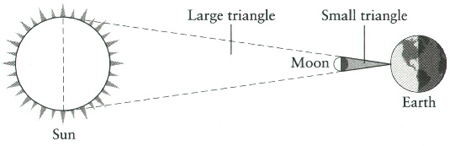

Chapter 1
IN THE BEGINNING
Science must begin with myths, and with the criticism of myths.
KARL POPPER
I do not feel obliged to believe that the same God who has endowed us with sense, reason and intellect has intended us to forgo their use.
GALILEO GALILEI
Living on Earth may be expensive, but it includes an annual free trip around the Sun.
ANONYMOUS
Physics is not a religion. If it were, we’d have a much easier time raising money.
LEON LEDERMAN
Our universe is dotted ‘with over 100 billion galaxies, and each one contains roughly 100 billion stars. It is unclear how many planets are orbiting these stars, but it is certain that at least one of them has evolved life. In particular, there is a life form that has had the capacity and audacity to speculate about the origin of this vast universe.
Humans have been staring up into space for thousands of generations, but we are privileged to be part of the first generation who can claim to have a respectable, rational and coherent description for the creation and evolution of the universe. The Big Bang model offers an elegant explanation of the origin of everything we see in the night sky, making it one of the greatest achievements of the human intellect and spirit. It is the consequence of an insatiable curiosity, a fabulous imagination, acute observation and ruthless logic.
Even more wonderful is that the Big Bang model can be understood by everyone. When I first learned about the Big Bang as a teenager, I was astonished by its simplicity and beauty, and by the fact that it was built on principles which, to a very large extent, did not go beyond the physics I was already learning at school. Just as Charles Darwin’s theory of natural selection is both fundamental and comprehensible to most intelligent people, the Big Bang model can be explained in terms that will make sense to non-specialists, without having to water down the key concepts within the theory.
But before encountering the earliest stirrings of the Big Bang model, it is necessary to lay some groundwork. The Big Bang model of the universe was developed over the last hundred years, and this was only possible because twentieth-century breakthroughs were built upon a foundation of astronomy constructed in previous centuries. In turn, these theories and observations of the sky were set within a scientific framework that had been assiduously crafted over two millennia. Going back even further, the scientific method as a path to objective truth about the material world could start to blossom only when the role of myths and folklore had begun to decline. All in all, the roots of the Big Bang model and the desire for a scientific theory of the universe can be traced right back to the decline of the ancient mythological view of the world.
From Giant Creators to Greek Philosophers
According to a Chinese creation myth that dates to 600 BC, Phan Ku the Giant Creator emerged from an egg and proceeded to create the world by using a chisel to carve valleys and mountains from the landscape. Next, he set the Sun, Moon and stars in the sky; he died as soon as these tasks were finished. The death of the Giant Creator was an essential part of the creation process, because fragments of his own body helped to complete the world. Phan Ku’s skull formed the dome of sky, his flesh formed the soil, his bones became rocks and his blood created rivers and seas. The last of his breath forged the wind and clouds, while his sweat became rain. His hair fell to Earth, creating plant life, and the fleas that had lodged in his hair provided the basis for the human race. As our birth required the death of our creator, we were to be cursed with sorrow forever after.
In contrast, in the Icelandic epic myth Prose Edda creation started not with an egg, but within the Yawning Gap. This void separated the contrasting realms of Muspell and Niflheim, until one day the fiery, bright heat of Muspell melted the freezing snow and ice of Niflheim, and the moisture fell into the Yawning Gap, sparking life in the form of Imir, the giant. Only then could the creation of the world begin.
The Krachi people of Togo in West Africa speak of another giant, the vast blue god Wulbari, more familiar to us as the sky. There was a time when he lay just above the Earth, but a woman pounding grain with a long timber kept prodding and poking him until he raised himself above the nuisance. However, Wulbari was still within reach of humans, who used his belly as a towel and snatched bits of his blue body to add spice to their soup. Gradually, Wulbari moved higher and higher until the blue sky was out of reach, where it has remained ever since.
For the Yoruba, also of West Africa, Olorun was Owner of the Sky. When he looked down upon the lifeless marsh, he asked another divine being to take a snail shell down to the primeval Earth. The shell contained a pigeon, a hen and a tiny amount of soil. The soil was sprinkled on the marshes of the Earth, whereupon the hen and pigeon began scratching and picking at it, until the marsh became solid ground. To test the world, Olorun sent down the Chameleon, which turned from blue to brown as it moved from sky to land, signalling that the hen and pigeon had completed their task successfully.
Throughout the world, every culture has developed its own myths about the origin of the universe and how it was shaped. These creation myths differ magnificently, each reflecting the environment and society from which it originated. In Iceland, it is the volcanic and meteorological forces that form the backdrop to the birth of Imir, but according to the Yoruba of West Africa it is the familiar hen and pigeon that give rise to solid land. Nevertheless, all these unique creation myths have some features in common. Whether it is the big, blue, bruised Wulbari or the dying giant of China, these myths inevitably invoke at least one supernatural being to play a crucial role in explaining the creation of the universe. Also, every myth represents the absolute truth within its society. The word ‘myth’ is derived from the Greek word mythos, which can mean ‘story’, but also means ‘word’, in the sense of ‘the final word’. Indeed, anybody who dared to question these explanations would have laid themselves open to accusations of heresy.
Nothing much changed until the sixth century BC, when there was a sudden outbreak of tolerance among the intelligentsia. For the very first time, philosophers were free to abandon accepted mythological explanations of the universe and develop their own theories. For example, Anaximander of Miletus argued that the Sun was a hole in a fire-filled ring that encircled the Earth and revolved around it. Similarly, he believed that the Moon and stars were nothing more than holes in the firmament, revealing otherwise hidden fires. Alternatively, Xenophanes of Colophon believed that the Earth exuded combustible gases that accumulated at night until they reached a critical mass and ignited, thereby creating the Sun. Night fell again when the ball of gas had burned out, leaving behind just the few sparks that we call stars. He explained the Moon in a similar way, with gases developing and burning over a twenty-eight-day cycle.
The fact that Xenophanes and Anaximander were not very close to the truth is unimportant, because the real point is that they were developing theories that explained the natural world without resorting to supernatural devices or deities. Theories that say that the Sun is a celestial fire seen through a hole in the firmament or a ball of burning gas are qualitatively different from the Greek myth that explained the Sun by invoking a fiery chariot driven across the sky by the god Helios. This is not to say that the new wave of philosophers necessarily wanted to deny the existence of the gods, rather that they merely refused to believe that it was divine meddling that was responsible for natural phenomena.
These philosophers were the first cosmologists, inasmuch as they were interested in the scientific study of the physical universe and its origins. The word ‘cosmology’ is derived from the ancient Greek word kosmeo, which means ‘to order’ or ‘to organise’, reflecting the belief that the universe could be understood and is worthy of analytical study. The cosmos had patterns, and it was the ambition of the Greeks to recognise these patterns, to scrutinise them and to understand what was behind them.
It would be a great exaggeration to call Xenophanes and Anaximander scientists in the modern sense of the term, and it would flatter them to consider their ideas as full-blown scientific theories. Nevertheless, they were certainly contributing to the birth of scientific thinking, and their ethos had much in common with modern science. For example, just like ideas in modern science, the ideas of the Greek cosmologists could be criticised and compared, refined or abandoned. The Greeks loved a good argument, so a community of philosophers would examine theories, question the reasoning behind them and ultimately choose which was the most convincing. In contrast, individuals in many other cultures would not dare to question their own mythology. Each mythology was an article of faith within its own society.
Pythagoras of Samos helped to reinforce the foundations of this new rationalist movement from around 540 BC. As part of his philosophy, he developed a passion for mathematics and demonstrated how numbers and equations could be used to help formulate scientific theories. One of his first breakthroughs was to explain the harmony of music via the harmony of numbers. The most important instrument in early Hellenic music was the tetrachord, or four-stringed lyre, but Pythagoras developed his theory by experimenting with the single-stringed monochord. The string was kept under a fixed tension, but the length of the string could be altered. Plucking a particular length of string generated a particular note, and Pythagoras realised that halving the length of the same string created a note that was one octave higher and in harmony with the note from the plucking of the original string. In fact, changing the string’s length by any simple fraction or ratio would create a note harmonious with the first (e.g. a ratio of 3:2, now called a musical fifth), but changing the length by an awkward ratio (e.g. 15:37) would lead to a discord.
Once Pythagoras had shown that mathematics could be used to help explain and describe music, subsequent generations of scientists used numbers to explore everything from the trajectory of a cannonball to chaotic weather patterns. Wilhelm Röntgen, who discovered X-rays in 1895, was a firm believer in the Pythagorean philosophy of mathematical science, and once pointed out: ‘The physicist in preparing for his work needs three things: mathematics, mathematics and mathematics.’
Pythagoras’ own mantra was ‘Everything is number.’ Fuelled by this belief, he tried to find the mathematical rules that governed the heavenly bodies. He argued that the movement of the Sun, Moon and planets across the sky generated particular musical notes, which were determined by the lengths of their orbits. Therefore, Pythagoras concluded, these orbits and notes had to have specific numerical proportions for the universe to be in harmony. This became a popular theory in its time. We can re-examine it from a modern perspective and see how it stands up to the rigours of today’s scientific method. On the positive side, Pythagoras’ claim that the universe is filled with music does not rely on any supernatural force. Also, the theory is rather simple and quite elegant, two qualities that are highly valued in science. In general, a theory founded on a single short, beautiful equation is preferred to a theory that relies on several awkward, ugly equations qualified by lots of complicated and spurious caveats. As the physicist Berndt Matthias put it: ‘If you see a formula in the Physical Review that extends over a quarter of a page, forget it. It’s wrong. Nature isn’t that complicated.’ However, simplicity and elegance are secondary to the most important feature of any scientific theory, which is that it must match reality and it must be open to testing, and this is where the theory of celestial music fails completely. According to Pythagoras, we are constantly bathed in his hypothetical heavenly music, but we cannot perceive it because we have been hearing it since birth and have become habituated to it. Ultimately, any theory that predicts a music that could never be heard, or anything else that could never be detected, is a poor scientific theory.
Every genuine scientific theory must make a prediction about the universe that can be observed or measured. If the results of an experiment or observation match the theoretical prediction, this is a good reason why the theory might become accepted and then incorporated into the grander scientific framework. On the other hand, if the theoretical prediction is inaccurate and conflicts with an experiment or observation, then the theory must be rejected, or at least adapted, regardless of how well the theory does in terms of beauty or simplicity. It is the supreme challenge, and a brutal one, but every scientific theory must be testable and compatible with reality. The nineteenth-century naturalist Thomas Huxley stated it thus: ‘The great tragedy of Science — the slaying of a beautiful hypothesis by an ugly fact.’
Fortunately, Pythagoras’ successors built on his ideas and improved on his methodology. Science gradually became an increasingly sophisticated and powerful discipline, capable of staggering achievements such as measuring the actual diameters of the Sun, Moon and Earth, and the distances between them. These measurements were milestones in the history of astronomy, representing as they do the first tentative steps on the road to understanding the entire universe. As such, these measurements deserve to be described in a little detail.
Before any celestial distances or sizes could be calculated, the ancient Greeks first had to establish that the Earth is a sphere. This view gained acceptance in ancient Greece as philosophers became familiar with the notion that ships gradually disappear over the horizon until only the tip of the mast could be seen. This made sense only if the surface of the sea curves and falls away. If the sea has a curved surface, then presumably so too does the Earth, which means it is probably a sphere. This view was reinforced by observing lunar eclipses, when the Earth casts a disc-shaped shadow upon the Moon, exactly the shape you would expect from a spherical object. Of equal significance was the fact that everyone could see that the Moon itself was round, suggesting that the sphere was the natural state of being, adding even more ammunition to the round Earth hypothesis. Everything began to make sense, including the writings of the Greek historian and traveller Herodotus, who told of people in the far north who slept for half the year. If the Earth was spherical, then different parts of the globe would be illuminated in different ways according to their latitude, which naturally gave rise to a polar winter and nights that lasted for six months.
But a spherical Earth raised a question that still bothers children today — what stops people in the southern hemisphere from falling off? The Greek solution to this puzzle was based on the belief that the universe had a centre and that everything was attracted to this centre. The centre of the Earth supposedly coincided with the hypothetical universal centre, so the Earth itself was static and everything on its surface was pulled towards the centre. Hence, the Greeks would be held on the ground by this force, as would everybody else on the globe, even if they lived down under.
The feat of measuring the size of the Earth was first accomplished by Eratosthenes, born in about 276 BC in Cyrene, in modern-day Libya. Even when he was a little boy it was clear that Eratosthenes had a brilliant mind, one that he could turn to any discipline, from poetry to geography. He was even nicknamed Pentathlos, meaning an athlete who participates in the five events of the pentathlon, hinting at the breadth of his talents. Eratosthenes spent many years as the chief librarian at Alexandria, arguably the most prestigious academic post in the ancient world. Cosmopolitan Alexandria had taken over from Athens as the intellectual hub of the Mediterranean, and the city’s library was the most respected institution of learning in the world. Forget any notion of strait-laced librarians stamping books and whispering to each other, because this was a vibrant and exciting place, full of inspiring scholars and dazzling students.
While at the library, Eratosthenes learned of a well with remarkable properties, situated near the town of Syene in southern Egypt, near modern-day Aswan. At noon on 21 June each year, the day of the summer solstice, the Sun shone directly into the well and illuminated it all the way to the bottom. Eratosthenes realised that on that particular day the Sun must be directly overhead, something that never happened in Alexandria, which was several hundred kilometres north of Syene. Today we know that Syene lies close to the Tropic of Cancer, the most northerly latitude from which the Sun can appear overhead.
Aware that the Earth’s curvature was the reason why the Sun could not be overhead at both Syene and Alexandria simultaneously, Eratosthenes wondered if he could exploit this to measure the circumference of the Earth. He would not necessarily have thought about the problem in the same way we would, as his interpretation of geometry and his notation would have been different, but here is a modern explanation of his approach. Figure 1 shows how parallel rays of light from the Sun hit the Earth at noon on 21 June. At exactly the same moment that sunlight was plunging straight down the well at Syene, Eratosthenes stuck a stick vertically in the ground at Alexandria and measured the angle between the Sun’s rays and the stick. Crucially, this angle is equivalent to the angle between two radial lines drawn from Alexandria and Syene to the centre of the Earth. He measured the angle to be 7.2°.
Figure 1 Eratosthenes used the shadow cast by a stick at Alexandria to calculate the circumference of the Earth. He conducted the experiment at the summer solstice, when the Earth was at its maximum tilt and when towns lying along the Tropic of Cancer were closest to the Sun. This meant that the Sun was directly overhead at noon at those towns. For reasons of clarity, the distances in this and other diagrams are not drawn to scale. Similarly, angles may be exaggerated.
Next, imagine somebody at Syene who decides to walk in a straight line towards Alexandria, and who carries on walking until they circumnavigate the globe and return to Syene. This person would go right round the Earth, traversing a complete circle and covering 360°. So, if the angle between Syene and Alexandria is only 7.2°, then the distance between Syene and Alexandria represents 7.2/360, or 1/50 of the Earth’s circumference. The rest of the calculation is straightforward. Eratosthenes measured the distance between the two towns, which turned out to be 5,000 stades. If this represents 1/50 of the total circumference of the Earth, then the total circumference must be 250,000 stades.
But you might well be wondering, how far is 250,000 stades? One stade was a standard distance over which races were held. The Olympic stade was 185 metres, so the estimate for the circumference of the Earth would be 46,250 km, which is only 15% bigger than the actual value of 40,100 km. In fact, Eratosthenes may have been even more accurate. The Egyptian stade differed from the Olympic stade and was equal to just 157 metres, which gives a circumference of 39,250 km, accurate to 2%.
Whether he was accurate to 2% or 15% is irrelevant. The important point is that Eratosthenes had worked out how to reckon the size of the Earth scientifically. Any inaccuracy was merely the result of poor angular measurement, an error in the Syene—Alexandria distance, the timing of noon on the solstice, and the fact that Alexandria was not quite due north of Syene. Before Eratosthenes, nobody knew if the circumference was 4,000 km or 4,000,000,000 km, so nailing it down to roughly 40,000 km was a huge achievement. It proved that all that was required to measure the planet was a man with a stick and a brain. In other words, couple an intellect with some experimental apparatus and almost anything seems achievable.
It was now possible for Eratosthenes to deduce the size of the Moon and the Sun, and their distances from the Earth. Much of the groundwork had already been laid by earlier natural philosophers, but their calculations were incomplete until the size of the Earth had been established, and now Eratosthenes had the missing value. For example, by comparing the size of the Earth’s shadow cast upon the Moon during a lunar eclipse, as shown in Figure 2, it was possible to deduce that the Moon’s diameter was about one-quarter of the Earth’s. Once Eratosthenes had shown that the Earth’s circumference was 40,000 km, then its diameter was roughly (40,000 ÷ π) km, which is roughly 12,700 km. Therefore the Moon’s diameter was (1/4 × 12,700) km, or nearly 3,200 km.
Figure 2 The relative sizes of the Earth and the Moon can be estimated by observing the Moon’s passage through the Earth’s shadow during a lunar eclipse. The Earth and Moon are very far from the Sun compared with the distance from the Earth to the Moon, so the size of the Earth’s shadow is much the same as the size of the Earth itself.
The diagram shows the Moon passing through the Earth’s shadow. In this particular eclipse – when the Moon passes roughly through the centre of the Earth s shadow – it takes 50 minutes for the Moon to go from touching the shadow to being fully covered, so 50 minutes is an indication of the Moon’s own diameter. The time required for the front of the Moon to cross the entire Earth’s shadow is 200 minutes, which is an indication of the Earth’s diameter. The Earth’s diameter is therefore roughly four times the Moon’s diameter.
It was then easy for Eratosthenes to estimate the distance to the Moon. One way would have been to stare up at the full Moon, close one eye and stretch out your arm. If you try this you will notice that you can cover the Moon with the end of your forefinger. Figure 3 shows that your fingernail forms a triangle with your eye. The Moon forms a similar triangle, with a vastly greater size but identical proportions. The ratio between the length of your arm and the height of your fingernail, which is about 100:1, must be the same as the ratio between the distance to the Moon and the Moon’s own diameter. This means that the distance to the Moon must be roughly 100 times greater than its diameter, which gives a distance of 320,000 km.
Next, thanks to a hypothesis by Anaxagoras of Clazomenae and a clever argument by Aristarchus of Samos, it was possible for Eratosthenes to calculate the size of the Sun and how far away it was. Anaxagoras was a radical thinker in the fifth century BC who deemed the purpose of life to be ‘the investigation of the Sun, the Moon and the heavens’. He believed that the Sun was a white-hot stone and not a divinity, and similarly he believed that the stars were also hot stones, but too far away to warm the Earth. In contrast, the Moon was supposed to be a cold stone that did not emit light, and Anaxagoras argued that moonshine was nothing more than reflected sunlight. Despite the increasingly tolerant intellectual climate in Athens, where Anaxagoras lived, it was still controversial to claim that the Sun and Moon were rocks and not gods, so much so that jealous rivals accused Anaxagoras of heresy and organised a campaign that resulted in his exile to Lampsacus, in Asia Minor. The Athenians had a penchant for adorning their city with idols, which is why in 1638 Bishop John Wilkins pointed out the irony of a man who turned gods into stones being persecuted by people who turned stones into gods.
Figure 3 Having estimated the size of the Moon, it is relatively easy to work out the distance to the Moon. First, you will notice that you can just block out the Moon with a fingertip at arms length. Therefore, it becomes clear that the ratio of a fingernail’s height to an arm’s length is roughly the same as the ratio of the Moon’s diameter to its distance from the Earth. An arm’s length is roughly a hundred times longer than a fingernail, so the distance to the Moon is roughly a hundred times its diameter.
In the third century BC, Aristarchus built on Anaxagoras’ idea. If moonshine was reflected sunshine, he argued, then the half Moon must occur when the Sun, Moon and Earth formed a right-angled triangle, as shown in Figure 4. Aristarchus measured the angle between the lines connecting the Earth to the Sun and Moon, and then used trigonometry to work out the ratio between the Earth—Moon and Earth—Sun distances. He measured the angle to be 87°, which meant that the Sun was roughly 20 times farther away than the Moon, and our previous calculation has already given us the distance to the Moon. In fact, the correct angle is 89.85°, and the Sun is 400 times further away than the Moon, so Aristarchus had clearly struggled to measure this angle accurately. Once again, accuracy is not the point: the Greeks had come up with a valid method, which was the key breakthrough, and better measuring tools would take future scientists closer to the true answer.
Figure 4 Aristarchus argued that it was possible to estimate the distance to the Sun using the fact that the Earth, Moon and Sun form a right-angled triangle when the Moon is at its half phase. At half Moon he measured the angle shown in the diagram. Simple trigonometry and the known Earth-Moon distance can then be used to determine the Earth-Sun distance.
Finally, deducing the size of the Sun is obvious, because it is a well-established fact that the Moon fits almost perfectly over the Sun during a solar eclipse. Therefore, the ratio of the Sun’s diameter to the Sun’s distance from the Earth must be the same as the ratio of the Moon’s diameter to the Moon’s distance from the Earth, as shown in Figure 5. We already know the Moon’s diameter and its distance from the Earth, and we also know the Sun’s distance from the Earth, so the Sun’s diameter is easy to calculate. This method is identical to the one illustrated in Figure 3, whereby the distance to and height of our fingernail was used to measure the distance to the Moon, except that now the Moon has taken the place of our fingernail as an object of known size and distance.
The amazing achievements of Eratosthenes, Aristarchus and Anaxagoras illustrate the advances in scientific thinking that were taking place in ancient Greece, because their measurements of the universe relied on logic, mathematics, observation and measurement. But do the Greeks really deserve all the credit for laying the foundations of science? After all, what about the Babylonians, who were great practical astronomers, making thousands of detailed observations? It is generally agreed by philosophers and historians of science that the Babylonians were not true scientists, because they were still content with a universe guided by gods and explained with myths. In any case, collecting hundreds of measurements and listing endless stellar and planetary positions was trivial compared with genuine science, which has the glorious ambition of trying to explain such observations by understanding the underlying nature of the universe. As the French mathematician and philosopher of science Henri Poincaré rightly declared: ‘Science is built up with facts, as a house is with stones. But a collection of facts is no more a science than a heap of stones is a house.’

Figure 5 It is possible to estimate the size of the Sun, once we know its distance. One approach is to use a total solar eclipse and our knowledge of the Moon’s distance and diameter. A total solar eclipse is visible only from a small patch on the Earth’s surface at any given time, because the Sun and the Moon appear almost the same size when viewed from the Earth. This diagram (not to scale) shows how an eclipse observer on the Earth is at the apex of two similar triangles. The first triangle stretches to the Moon, and the second triangle to the Sun. Knowing the distances to the Moon and to the Sun and knowing the diameter of the Moon is enough to deduce the diameter of the Sun.
If the Babylonians were not the first proto-scientists, then what about the Egyptians? The Great Pyramid of Cheops predates the Parthenon by two thousand years, and the Egyptians were certainly far in advance of the Greeks in terms of their development of weighing scales, cosmetics, inks, wooden locks, candles and many other inventions. These, however, are examples of technology, not science. Technology is a practical activity, as demonstrated by the Egyptian examples already given, which helped to facilitate death rituals, trading, beautification, writing, protection and illumination. In short, technology is all about making life (and death) more comfortable, while science is simply an effort to understand the world. Scientists are driven by curiosity, rather than comfort or utility.
Although scientists and technologists have very different goals, science and technology are frequently confused as being one and the same, probably because scientific discoveries often lead to technological breakthroughs. For example, scientists spent decades making discoveries about electricity, which technologists then used to invent light bulbs and many other devices. In ancient times, however, technology grew without the benefit of science, so the Egyptians could be successful technologists without having any grasp of science. When they brewed beer, they were interested in the technological methods and the results, but not why or how one material was being transformed into another. They had no inkling of the underlying chemical or biochemical mechanisms at work.
So, the Egyptians were technologists, not scientists, whereas Eratosthenes and his colleagues were scientists, not technologists. The intentions of the Greek scientists were identical to those described two thousand years later by Henri Poincaré:
The scientist does not study nature because it is useful; he studies it because he delights in it, and he delights in it because it is beautiful. If nature were not beautiful, it would not be worth knowing, and if nature were not worth knowing, life would not be worth living. Of course I do not here speak of that beauty that strikes the senses, the beauty of qualities and appearances; not that I undervalue such beauty, far from it, but it has nothing to do with science; I mean that profounder beauty which comes from the harmonious order of the parts, and which a pure intelligence can grasp.
In summary, the Greeks had shown how knowing the diameter of the Sun depends on knowing the distance to the Sun, which depends on knowing the distance to the Moon, which depends on knowing the diameter of the Moon, which depends on knowing the diameter of the Earth, and that was Eratosthenes’ great breakthrough. These distance and diameter stepping stones were made possible by exploiting a deep vertical well on the Tropic of Cancer, the Earth’s shadow cast upon the Moon, the fact that the Sun, Earth and Moon form a right angle at half Moon, and the observation that the Moon fits perfectly over the Sun during a solar eclipse. Throw in some assumptions, such as moonlight being nothing more than reflected sunlight, and a framework of scientific logic takes shape. This architecture of scientific logic has an inherent beauty which emerges from how various arguments fit together, how several measurements interlock with one another, and how different theories are suddenly introduced to add strength to the edifice.
Having completed their initial phase of measurement, the astronomers of ancient Greece were now ready to examine the motions of the Sun, Moon and planets. They were about to create a dynamic model of the universe in an attempt to discern the interplay between the various celestial bodies. It would be the next step on the road to a deeper understanding of the universe.
Circles within Circles
Our most distant ancestors studied the sky in detail, whether it was to predict changes in the weather, keep track of time or measure direction. Every day they watched the Sun cross the sky, and every night they watched the procession of stars that followed in its wake. The land on which they stood was firm and fixed, so it was only natural to assume that it was the heavenly bodies that moved relative to a static Earth, not vice versa. Consequently, the ancient astronomers developed a view of the world in which the Earth was a central static globe with the universe revolving around it.
The measurements made by Eratosthenes, Aristarchus and Anaxagoras were inaccurate, so the table below corrects previously quoted figures by providing modern values for the various distances and diameters.
| Earth’s circumference | 40,100 km = 4.01 × 104 km |
| Earth’s diameter | 12,750 km = 1.275 × 104 km |
| Moon’s diameter | 3,480 km = 3.48 × 103km |
| Sun’s diameter | 1,390,000 km = 1.39 × 106 km |
| Earth-Moon distance | 384,000 km = 3.84 × l05 km |
| Earth-Sun distance | 150,000,000 km = 1.50 × 108km |
This table also serves as an introduction to exponential notation, a way of expressing very large numbers — and in cosmology there are some very, very large numbers:
| 101 means 10 | = 10 |
| 102 means 10 × 10 | =100 |
| 103 means 10x10x10 | =1,000 |
| 104 means 10 × 10 × 10 | =10,000 etc. |
The Earth’s circumference, for example, can be expressed as: 40,100 km = 4.01 X 10,000 km = 4.01 X 104km.
Exponential notation is an excellent way of concisely expressing numbers that would otherwise be full of zeros. Another way to think of 10N is as 1 followed by N zeros, so that 103 is 1 followed by three zeros, which is 1,000.
Exponential notation is also used for writing very small numbers:
| 10-1 means 1 ÷ 10 | =0.1 |
| 10-2 means 1 ÷ (10 X 10) | = 0.01 |
| 10-3 means 1 ÷ (10x10x10) | = 0.001 |
| 10-4 means 1 ÷ (10×10×10×10) | = 0.0001 etc. |
In reality, it is of course the Earth that moves around the Sun, and not the Sun moving around the Earth, but nobody considered this possibility until Philolaus of Croton entered the debate. A pupil of the Pythagorean school in the fifth century BC, he was the first to suggest that the Earth orbited the Sun, not vice versa. In the following century, Heracleides of Pontus built on Philolaus’ ideas, even though his friends thought he was crazy, nicknaming him Paradoxolog, ‘the maker of paradoxes’. And the final touches to this vision of the universe were added by Aristarchus, who was born in 310 BC, the same year that Heracleides died.
Although Aristarchus contributed to measuring the distance to the Sun, this was a minor accomplishment compared with his stunningly accurate overview of the universe. He was trying to dislodge the instinctive (though incorrect) picture of the universe, in which the Earth is at the centre of everything, as shown in Figure 6(a). In contrast, Aristarchus’ less obvious (though correct) picture has the Earth dashing around a more dominant Sun, as shown in Figure 6(b). Aristarchus was also right when he stated that the Earth spins on its own axis every 24 hours, which explained why each day we face towards the Sun and each night we face away from it.
Aristarchus was a highly respected philosopher, and his ideas on astronomy were well known. Indeed, his belief in a Sun-centred universe was documented by Archimedes, who wrote: ‘He hypothesises that the fixed stars and the Sun remain unmoved; that the Earth is borne around the Sun on the circumference of a circle.’ Yet philosophers completely abandoned this largely accurate vision of the Solar System, and the idea of a Sun-centred world disappeared for the next fifteen hundred years. The ancient Greeks were supposed to be smart, so why did they reject Aristarchus’ insightful world-view and stick to an Earth-centred universe?
Figure 6 Diagram (a) shows the classical and incorrect Earth-centred model of the universe, in which the Moon, Sun and other planets orbit the Earth. Even the thousands of stars orbit the Earth. Diagram (b) shows Aristarchus’ Sun-centred view of the universe, with only the Moon orbiting the Earth. In this case, the stars form a static backdrop to the universe.
Egocentric attitudes may have been a contributory factor behind the dominance of the geocentric world-view, but there were other reasons for preferring an Earth-centred universe to Aristarchus’ Sun-centred universe. One basic problem with the Sun-centred world-view was that it appeared to be simply ridiculous. It just seemed so utterly obvious that the Sun revolved round a static Earth, and not the other way round. In short, a Sun-centred universe ran counter to. Good scientists, however, should not be swayed by common sense, because it sometimes has little to do with the underlying scientific truth. Albert Einstein condemned common sense, declaring it to be ‘the collection of prejudices acquired by age eighteen’.
Another reason why the Greeks rejected Aristarchus’ Solar System was its apparent failure to stand up to scientific scrutiny. Aristarchus had built a model of the universe that was supposed to match reality, but it was not clear that his model was accurate. Did the Earth really orbit the Sun? Critics pointed to three apparent flaws in Aristarchus’ Sun-centred model.
First, the Greeks expected that if the Earth moved then we would feel a constant wind blowing against us, and we would be swept off our feet as the ground raced from under us. However, we feel no such constant wind, and neither is the ground tugged away, so the Greeks concluded that the Earth must be stationary. Of course, the Earth does move, and the reason that we are oblivious to our fantastic velocity through space is that everything on the Earth moves with it, including us, the atmosphere and the ground. The Greeks failed to appreciate this argument.
The second problematic point was that a moving Earth was incompatible with the Greek understanding of gravity. As mentioned earlier, the traditional view was that everything tended to move towards the centre of the universe, and the Earth was already at the centre, so it did not move. This theory made perfect sense, because it explained that apples fell from trees and headed towards the centre of the Earth because they were being attracted to the centre of the universe. But if the Sun were at the centre of the universe, then why would objects fall towards the Earth? Instead, apples should not fall down from trees, but should be sucked up towards the Sun — indeed, everything on Earth should fall towards the Sun. Today we have a clearer understanding of gravity, which makes a Sun-centred Solar System much more sensible. The modern theory of gravity describes how objects close to the massive Earth are attracted to the Earth, and in turn the planets are held in orbit by the attraction of the even more massive Sun. Once again, however, this explanation was beyond the limited scientific framework of the Greeks.
The third reason why philosophers rejected Aristarchus’ Sun-centred universe was the apparent lack of any shift in the positions of the stars. If the Earth were travelling huge distances around the Sun, then we would see the universe from different positions during the course of the year. Our changing vantage point should mean a changing perspective on the universe, and the stars should move relative to one another, which is known as stellar parallax. You can see parallax in action at a local level by simply holding one finger in the air just a few centimetres in front of your face. Close your left eye and use your right eye to line your finger up with a nearby object, perhaps the edge of a window. Next, close your right eye and open your left one, and you will see that your finger has shifted to the right relative to the edge of the window. Switch between your eyes quickly and your finger will jump to and fro. So shifting your vantage point from one eye to the other, a distance of just a few centimetres, moves the apparent position of your finger relative to another object. This is illustrated in Figure 7(a).
The distance from the Earth to the Sun is 150 million km, so if the Earth orbited the Sun then it would be 300 million km away from its original position after six months. The Greeks found it impossible to detect any shift in the positions of the stars relative to one another over the course of the year, despite the enormous shift in Earthly perspective that would happen if we orbited the Sun. Once more, the evidence seemed to point to the conclusion that the Earth did not move and was at the centre of the universe. Of course, the Earth does orbit the Sun, and stellar parallax does exist, but it was imperceptible to the Greeks because the stars are so very far away. You can see how distance reduces the parallax effect by repeating the winking experiment, this time fully extending your arm so that your finger is almost a metre away. Again, use your right eye to line up your finger with the edge of the window. This time, when you switch to your left eye the parallax shift should be much less significant than before because your finger is farther away, as illustrated in Figure 7(b). In summary, the Earth does move, but the parallax shift rapidly reduces with distance and the stars are very far away, so stellar parallax could not be detected with primitive equipment.

Figure 7 Parallax is the apparent shift in the position of an object due to a change in an observer’s vantage point. Diagram (a) shows how a marker finger lines up with the left window edge when viewed with the right eye, but shifts when viewed with the other eye. Diagram (b) shows that the parallax shift caused by switching between eyes is significantly reduced if the marker finger is more distant. Because the Earth orbits the Sun, our vantage point changes, so if one star is used as a marker then it should shift relative to more distant stars over the course of a year. Diagram (c) shows how the marker star lines up with two different background stars depending on the position of the Earth. However, if diagram (c) were drawn to scale, then the stars would be over 1 km off the top of the page! Therefore the parallax shift would be minuscule and imperceptible to the ancient Greeks. The Greeks assumed that the stars were much closer, so to them a lack of parallax shift implied a static Earth.
At the time, the evidence against Aristarchus’ Sun-centred model of the universe seemed overwhelming, so it is quite understandable why all his philosopher friends stayed loyal to the Earth-centred model. Their traditional model was perfectly sensible, rational and self-consistent. They were content with their vision of the universe and their place within it. However, there was one outstanding problem. Sure enough, the Sun, Moon and stars all seemed to march obediently around the Earth, but there were five heavenly bodies that dawdled across the heavens in a rather haphazard manner. Occasionally, some of them even dared to stop momentarily before temporarily reversing their motion in a volte-face known as retrograde motion. These wandering rebels were the five other known planets: Mercury, Venus, Mars, Jupiter and Saturn. Indeed, the word ‘planet’ derives from the Greek planetes, meaning ‘wanderer’. Similarly, the Babylonian word for planet was bibbu, literally ‘wild sheep’ — because the planets seemed to stray all over the place. And the ancient Egyptians called Mars sekded-ef em khetkhet, meaning ‘one who travels backwards’.
From our modern Earth-orbits-Sun perspective, it is easy enough to understand the behaviour of these heavenly vagabonds. In reality, the planets orbit the Sun in a steady manner, but we view them from a moving platform, the Earth, which is why their motion appears to be irregular. In particular, the retrograde motions exhibited by Mars, Saturn and Jupiter are easy to explain. Figure 8(a) shows a stripped-down Solar System containing just the Sun, Earth and Mars. Earth orbits the Sun more quickly than Mars, and as we catch up to Mars and pass it, our line of sight to Mars shifts back and forth. However, from the old Earth-centred perspective, in which we sit at the centre of the universe and everything revolves around us, the orbit of Mars was a riddle. It appeared that Mars, as shown in Figure 8(b), looped the loop in a most peculiar manner as it orbited the Earth. Saturn and Jupiter displayed similar retrograde motions, which the Greeks also put down to looping orbits.
These loopy planetary orbits were hugely problematic for the ancient Greeks, because all the orbits were supposed to be circular according to Plato and his pupil Aristotle. They declared that the circle, with its simplicity, beauty and lack of beginning or end, was the perfect shape, and since the heavens were the realm of perfection then celestial bodies had to travel in circles. Several astronomers and mathematicians looked into the problem and, over the course of several centuries, they developed a cunning solution — a way to describe looping planetary orbits in terms of combinations of circles, which was in keeping with Plato and Aristotle’s edict of circular perfection. The solution became associated with the name of one astronomer, Ptolemy, who lived in Alexandria in the second century AD.
Figure 8 Planets such as Mars, Jupiter and Saturn exhibit so-called retrograde motion when viewed from Earth. Diagram (a) shows a stripped-down Solar System with just the Earth and Mars orbiting (anticlockwise) around the Sun. From position 1, we would see Mars move increasingly ahead of us, which continues as we observe Mars from position 2. But Mars pauses at position 3, and by position 4 is now moving to the right, and even further to the right when Earth arrives at position 5. There it pauses once more, before resuming its original direction of travel, as seen from positions 6 and 7. Of course, Mars is continually moving anticlockwise around the Sun, but it appears to us that Mars is zigzagging because of the relative motions of the Earth and Mars. Retrograde motion makes perfect sense in a Sun-centred model of the universe.
Diagram (b) shows how believers in an Earth-centred model perceived the orbit of Mars. The zigzag of Mars was interpreted as an actual looping orbit. In other words, traditionalists believed that the static Earth sat at the centre of the universe, while Mars looped its way around the Earth.
Ptolemy’s world-view started with the widely held assumption that the Earth is at the centre of the universe and stationary, otherwise ‘all the animals and all the separate weights would be left behind floating on the air’. Next, he explained the orbits of the Sun and Moon in terms of simple circles. Then, in order to explain retrograde motions, he developed a theory of circles within circles, as illustrated in Figure 9. To generate a path with periodic retrograde motion, such as the one followed by Mars, Ptolemy proposed starting with a single circle (known as the deferent), with a rod attached to the circle so that it pivoted. The planet then occupied a position at the end of this pivoted rod. If the main deferent circle remained fixed and the rod rotated around its pivot, then the planet would follow a circular path with a short radius (known as the epicycle), as shown in Figure 9(a). Alternatively, if the main deferent circle rotated and the rod remained fixed, then the planet would follow a circular path with a larger radius, as shown in Figure 9(b). However, if the rod rotated around its pivot and at the same time the pivot rotated with the main deferent circle, then the planet’s path would be a composite of its motion around the two circles, which mimics a retrograde loop, as shown in Figure 9(c).
Although this description of circles and pivots conveys the central idea of Ptolemy’s model, it was actually far more complicated. To start with, Ptolemy thought of his model in three dimensions and constructed it from crystal spheres, but for simplicity we will continue to think in terms of two-dimensional circles. Also, in order to accurately explain the retrogrades of different planets, Ptolemy had to carefully tune the radius of the deferent and the radius of the epicycle for each planet, and select the speed at which each rotated. For even greater accuracy he introduced two other variable elements. The eccentric defined a point to the side of the Earth which acted as a slightly displaced centre for the deferent circle, while the equant defined another point close to the Earth, whose influence contributed to the variable speed of the planet. It is hard to imagine this increasingly complicated explanation for planetary orbits, but essentially it consisted of nothing more than circles on top of more circles within yet more circles.
Figure 9 The Ptolemaic model of the universe explained the loopy orbits of planets such as Mars using combinations of circles. Diagram (a) shows the main circle, called the deferent, and a pivoted rod with a planet on the end. If the deferent does not rotate, but the rod does rotate, then the planet follows the smaller, bold circle mapped out by the end of the rod, which is called an epicycle.
Diagram (b) shows what happens if the pivoted rod remains fixed and the deferent is allowed to rotate. The planet follows a circle with a large radius.
Diagram (c) shows what happens when both the rod rotates around its pivot, and the pivot rotates with the deferent. This time the epicycle is superimposed on the deferent, and the planet’s orbit is the combination of two circular paths, which results in the loopy retrograde orbit associated with a planet such as Mars. The radii of the deferent and epicycle can be adjusted and both speeds of rotation can be tuned to mimic the path of any planet.
The best analogy for Ptolemy’s model of the universe is to be found in a fairground. The Moon follows a simple path, a bit like a horse on a rather tame merry-go-round for young children. But the path of Mars is more like a wild waltzer ride, which locks the rider in a cradle that pivots at the end of a long rotating arm. The rider follows a circular path while spinning in the cradle, but at the same time he is following another, much larger, circular path at the end of the long arm that holds the cradle. Sometimes the two motions combine, giving rise to an even greater forward speed, while sometimes the cradle is moving backwards relative to the arm and the speed is slowed or even reversed. In Ptolemaic terminology, the cradle spins around an epicycle and the long arm traces out the deferent.
The Ptolemaic Earth-centred model of the universe was constructed to comply with the beliefs that everything revolves around the Earth and that all celestial objects follow circular paths. This resulted in a horribly complex model, replete with epicycles heaped upon deferents, upon equants, upon eccentrics. In The Sleepwalkers, Arthur Koestler’s history of early astronomy, the Ptolemaic model is described as ‘the product of tired philosophy and decadent science’. But despite being fundamentally wrong, the Ptolemaic system satisfied one of the basic requirements of a scientific model, which is that it predicted the position and movement of every planet to a higher degree of accuracy than any previous model. Even Aristarchus’ Sun-centred model of the universe, which happens to be basically correct, could not predict the motion of the planets with such precision. So, all in all, it is not surprising that Ptolemy’s model endured while Aristarchus’ disappeared. Table 2 summarises the key strengths and weaknesses of the two models, as understood by the ancient Greeks, and it serves only to reinforce the apparent superiority of the Earth-centred model.
Ptolemy’s Earth-centred model was enshrined in his Hè megalè syntaxis (‘The Great Collection’), written in about AD 150, which became the most authoritative text on astronomy for centuries to come. In fact, every astronomer in Europe for the next millennium was influenced by the Syntaxis, and none of them seriously questioned its Earth-centred picture of the universe. Syntaxis reached an even wider audience in AD 827, when it was translated into Arabic and retitled the Almagest (‘The Greatest’). So, during the lull in scholasticism during the European Middle Ages, Ptolemy’s ideas were kept alive and studied by the great Islamic scholars in the Middle East. During the golden age of the Islamic empire, Arab astronomers invented many new astronomical instruments, made significant celestial observations and built several major observatories, such as the al-Shammasiyyah observatory in Baghdad, but they never doubted Ptolemy’s Earth-centred universe with its planetary orbits defined by circles within circles within circles.
As Europe finally began to emerge from its intellectual slumber, the ancient knowledge of the Greeks was exported back to the West via the Moorish city of Toledo in Spain, where there was a magnificent Islamic library. When the city was captured from the Moors by the Spanish King Alfonso VI in 1085, scholars all over Europe were given an unprecedented opportunity to gain access to one of the world’s most important repositories of knowledge. Most of the library’s contents were written in Arabic, so the first priority was to establish an industrial-scale bureau of translation. Most translators worked with the aid of an intermediary to translate from Arabic into the Spanish vernacular, which they then translated into Latin, but one of the most prolific and brilliant translators was Gerard of Cremona, who learned Arabic so that he could achieve a more direct and accurate interpretation. He had been drawn to Toledo by rumours that Ptolemy’s masterpiece was to be found at the library and, of the seventy-six seminal books that he translated from Arabic into Latin, the Almagest was his most significant achievement.
Thanks to the efforts of Gerard and other translators, European scholars were able to reacquaint themselves with the writings of the past, and astronomical research in Europe was reinvigorated. Paradoxically, progress became stifled, because there was such reverence for the writings of the ancient Greeks that nobody dared to question their work. It was assumed that the classical scholars had mastered everything that could ever be understood, so books such as the Almagest were taken as gospel. This was despite the fact that the ancients had made some of the biggest blunders imaginable. For example, the writings of Aristotle were considered sacred, even though he had stated that men have more teeth than women, a generalisation based on the observation that stallions have more teeth than mares. Although he was married twice, Aristotle apparently never bothered to look into the mouth of either of his wives. He might have been a superlative logician, but he failed to grasp the concepts of observation and experimentation. The irony is that scholars had waited for centuries to recover the wisdom of the ancients – and then they had to spend centuries unlearning all the ancients’ mistakes. Indeed, after Gerard’s translation of the Almagest in 1175, Ptolemy’s Earth-centred model of the universe continued to survive intact for another four hundred years.
In the meantime, however, a few minor criticisms did emerge from such figures as Alfonso X, King of Castile and León (1221—84). Having made Toledo his capital, he instructed his astronomers to draw up what became known as the Alphonsine Tables of planetary motion, based partly on their own observations and partly on translated Arabic tables. Although he was a strong patron of astronomy, Alfonso remained resolutely unimpressed with Ptolemy’s intricate system of deferents, epicycles, equants and eccentrics: ‘If the Lord Almighty had consulted me before embarking upon Creation, I should have recommended something simpler.’
This table lists various criteria against which the Earth-centred and Sun-centred models could be judged, based on what was known in the first millennium AD. The ticks and crosses give crude indications of how well each theory fared in relation to the seven criteria, and a question mark
| Criterion | Earth-centred model | Success |
|---|---|---|
| 1. Common sense | It seems obvious that everything revolves around the Earth |
|
| 2. Awareness of motion | We do not detect any motion, therefore the Earth cannot be moving |
|
| 3. Falling to the ground | The centrality of the Earth explains why objects appear to fall downwards, i.e. objects are being attracted to the centre of the universe |
|
| 4. Stellar parallax | There is no detection of stellar parallax, absence of which is compatible with a static Earth and a stationary observer |
|
| 5. Predicting planetary orbits | Very close agreement — the best yet |
|
| 6. Retrograde paths of planets | Explained with epicycles and deferents |
|
| 7. Simplicity | Very complicated – epicycles, deferents, equants and eccentrics |
| Criterion | Sun-centred model | Success |
|---|---|---|
| 1. Common sense | It requires a leap of imagination and logic to see that the Earth might circle the Sun | |
| 2. Awareness of motion | We do not detect any motion, which is not easy to explain if the Earth is moving | |
| 3. Falling to the ground | There is no obvious explanation for why objects fall to the ground in a model where the Earth is not centrally located | |
| 4. Stellar parallax | The Earth moves, so the apparent lack of stellar parallax must be due to huge stellar distances; hopefully parallax would be detected with better equipment | |
| 5. Predicting planetary orbits | Good agreement, but not as good as in the Earth-centred model | |
| 6. Retrograde paths of planets | A natural consequence of the motion of the Earth and our changing vantage point |
|
| 7. Simplicity | Very simple – everything follows circles |
|
Then, in the fourteenth century, Nicole d’Oresme, chaplain to Charles V of France, openly stated that the case for an Earth-centred universe had not been fully proved, although he did not go as far as saying that he believed it to be wrong. And in fifteenth-century Germany, Cardinal Nicholas of Cusa suggested that the Earth is not the hub of the universe, but he stopped short of suggesting that the Sun should occupy the vacated throne.
The world would have to wait until the sixteenth century before an astronomer would have the courage to rearrange the universe and seriously challenge the cosmology of the Greeks. The man who would eventually reinvent Aristarchus’ Sun-centred universe was christened Mikolaj Kopernik, but he is better known by his Latinised name of Nicholas Copernicus.
The Revolution
Born in 1473 into a prosperous family in Torun, on the banks of the Vistula in modern-day Poland, Copernicus was elected a canon at the cathedral chapter of Frauenburg, largely thanks to the influence of his uncle Lucas, who was Bishop of Ermland. Having studied law and medicine in Italy, his main duty as canon was to act as physician and secretary to Lucas. These were not onerous responsibilities, and Copernicus was free to dabble in various activities in his spare time. He became an expert economist and advisor on currency reform, and even published his own Latin translations of the obscure Greek poet Theophylactus Simocattes.
However, Copernicus’s greatest passion was astronomy, which had interested him ever since he had bought a copy of the Alphonsine Tables as a student. This amateur astronomer would grow increasingly obsessed with studying the motion of the planets, and his ideas would eventually make him one of the most important figures in the history of science.
Surprisingly, all Copernicus’s astronomical research was contained in just 11/2 publications. Even more surprising, these 11/2 publications were hardly read during his lifetime. The 1/2 refers to his first work, the Commentariolus (‘Little Commentary’), which was handwritten, never formally published and circulated only among a few people in roughly 1514. Nevertheless, in just twenty pages Copernicus shook the cosmos with the most radical idea in astronomy for over one thousand years. At the heart of his pamphlet were the seven axioms upon which he based his view of the universe:
1. The heavenly bodies do not share a common centre.
2. The centre of the Earth is not the centre of the universe.
3. The centre of the universe is near the Sun.
4. The distance from the Earth to the Sun is insignificant compared with the distance to the stars.
5. The apparent daily motion of the stars is a result of the Earth’s rotation on its own axis.
6. The apparent annual sequence of movements of the Sun is a result of the Earth’s revolution around it. All the planets revolve around the Sun.
7. The apparent retrograde motion of some of the planets is merely the result of our position as observer on a moving Earth.
Copernicus’s axioms were spot on in every respect. The Earth does spin, the Earth and the other planets do go around the Sun, this does explain the retrograde planetary orbits, and failure to detect any stellar parallax was due to the remoteness of the stars. It is not clear what motivated Copernicus to formulate these axioms and break with the traditional world-view, but perhaps he was influenced by Domenico Maria de Novara, one of his professors in Italy. Novara was sympathetic to the Pythagorean tradition, which was at the root of Aristarchus’ philosophy, and it was Aristarchus who had first posited the Sun-centred model 1,700 years earlier.
The Commentariolus was a manifesto for an astronomical mutiny, an expression of Copernicus’s frustration and disillusionment with the ugly complexity of the ancient Ptolemaic model. Later he would condemn the makeshift nature of the Earth-centred model: ‘It is as though an artist were to gather the hands, feet, head and other members for his images from diverse models, each part excellently drawn, but not related to a single body, and since they in no way match each other, the result would be a monster rather than a man.’ Nevertheless, despite its radical contents, the pamphlet caused no ripples among the intellectuals of Europe, partly because it was read by so few people and partly because its author was a minor canon working on the fringes of Europe.
Copernicus was not dismayed, for this was only the start of his efforts to transform astronomy. After his uncle Lucas died in 1512 (having quite possibly been poisoned by the Teutonic Knights, who had described him as ‘the devil in human shape’), he had even more time to pursue his studies. He moved to Frauenburg Castle, set up a small observatory and concentrated on fleshing out his argument, adding in all the mathematical detail that was missing in the Commentariolus.
Copernicus spent the next thirty years reworking his Commentariolus, expanding it into an authoritative two-hundred-page manuscript. Throughout this prolonged period of research, he spent a great deal of time worrying about how other astronomers would react to his model of the universe, which was fundamentally at odds with accepted wisdom. There were often days when he even considered abandoning plans to publish his work for fear that he would be mocked far and wide. Moreover, he suspected that theologians would be wholly intolerant to what they would perceive as sacrilegious scientific speculation.
He was right to be concerned. The Church later demonstrated its intolerance by persecuting the Italian philosopher Giordano Bruno, who was part of the generation of dissenters that followed Copernicus. The Inquisition accused Bruno of eight heresies, but the existing records do not specify them. Historians think that it is likely that Bruno had offended the Church by writing On the Infinite Universe and Worlds, which argued that the universe is infinite, that stars have their own planets and that life flourishes on these other planets. When condemned to death for his crimes, he responded: ‘Perchance you who pronounce my sentence are in greater fear than I who receive it.’ On 17 February 1600, he was taken to Rome’s Campo dei Fiori (Field of Flowers), stripped naked, gagged, tied to a stake and burned to death.
Copernicus’s fear of persecution could have meant a premature end to his research, but fortunately a young German scholar from Wittenberg intervened. In 1539, Georg Joachim von Lauchen, known as Rheticus, travelled to Frauenburg to seek out Copernicus and find out more about his cosmological model. It was a brave move, because not only was the young Lutheran scholar facing an uncertain welcome in Catholic Frauenburg, but also his own colleagues were not sympathetic to his mission. The mood was typified by Martin Luther, who kept a record of dinner-table conversation about Copernicus: ‘There is talk of a new astronomer who wants to prove that the Earth moves and goes around instead of the sky, the Sun and the Moon, just as if somebody moving in a carriage or ship might hold that he was sitting still and at rest while the ground and the trees walked and moved… The fool wants to turn the whole art of astronomy upside-down.’
Luther called Copernicus ‘a fool who went against Holy Writ’, but Rheticus shared Copernicus’s unshakeable confidence that the route to celestial truth lay with science rather than Scripture. The sixty-six-year-old Copernicus was flattered by the attentions of the twenty-five-year-old Rheticus, who spent three years at Frauenburg reading Copernicus’s manuscript, providing him with feedback and reassurance in equal measure.
By 1541, Rheticus’s combination of diplomatic and astronomical skills was sufficient for him to obtain Copernicus’s blessing to take the manuscript to the printing house of Johannes Petreius in Nuremberg for publication. He had planned to stay to oversee the entire printing process, but was suddenly called away to Leipzig on urgent business, and so handed responsibility for supervising publication to a clergyman by the name of Andreas Osiander. At last, in the spring of 1543, De revolutionibus orbium cælestium (‘On the Revolutions of the Heavenly Spheres’) was finally published and several hundred copies were on their way to Copernicus.
Meanwhile, Copernicus had suffered a cerebral haemorrhage at the end of 1542, and was lying in bed, fighting to stay alive long enough to set eyes on the finished book that contained his life’s work. Copies of his treatise reached him just in time. His friend Canon Giese wrote a letter to Rheticus describing Copernicus’s plight: ‘For many days he had been deprived of his memory and mental vigour; he only saw his completed book at the last moment, on the day he died.’
Copernicus had completed his duty. His book offered the world a convincing argument in favour of Aristarchus’ Sun-centred model. De revolutionibus was a formidable treatise, but before discussing its contents it is important to address two perplexing mysteries surrounding its publication. The first of these relates to Copernicus’s incomplete acknowledgements. The introduction to De revolutionibus mentioned several people, such as Pope Paul III, the Cardinal of Capua and the Bishop of Kulm, yet there was no mention of Rheticus, the brilliant apprentice who had played the vital role of midwife to the birth of the Copernican model. Historians are baffled as to why his name was omitted and can only speculate that crediting a Protestant might have been looked upon unfavourably by the Catholic hierarchy which Copernicus was trying to impress. One consequence of this lack of acknowledgement was that Rheticus felt snubbed and would have nothing more to do with De revolutionibus after its publication.
The second mystery concerns the preface to De revolutionibus, which was added to the book without Copernicus’s consent and which effectively retracted the substance of his claims. In short, the preface undermined the rest of the book by stating that Copernicus’s hypotheses ‘need not be true or even probable’. It emphasised ‘absurdities’ within the Sun-centred model, implying that Copernicus’s own detailed and carefully argued mathematical description was nothing more than a fiction. The preface does admit that the Copernican system is compatible with observations to a reasonable degree of accuracy, but it emasculates the theory by stating that it is merely a convenient way to do calculations, rather than an attempt to represent reality. Copernicus’s original handwritten manuscript still exists, so we know that the original opening was quite different in tone from the printed preface that trivialised his work. The new preface must therefore have been inserted after Rheticus had left Frauenburg with the manuscript. This would mean that Copernicus was on his deathbed when he first read it, by which time the book had been printed and it was too late to make any changes. Perhaps it was the very sight of the preface that sent him to his grave.
Figure 10 This diagram from Copernicus’s De revolutionibus illustrates his revolutionary view of the universe. The Sun is firmly at the hub and is orbited by the planets. Earth itself is orbited by the Moon and is correctly located between the orbits of Venus and Mars.
So who wrote and inserted the new preface? The main suspect is Osiander, the clergyman who took on responsibility for publication when Rheticus left Nuremberg for Leipzig. It is likely that he believed that Copernicus would suffer persecution once his ideas became public, and he probably inserted the preface with the best of intentions, hoping that it would assuage critics. Evidence for Osiander’s concerns can be found in a letter to Rheticus in which he mentions the Aristotelians, meaning those who believed in the Earth-centred view of the world: ‘The Aristotelians and theologians will easily be placated if they are told that … the present hypotheses are not proposed because they are in reality true, but because they are the most convenient to calculate the apparent composite motions.’
But in his intended preface, Copernicus had been quite clear that he was willing to adopt a defiant stance against his critics: ‘Perhaps there will be babblers who, although completely ignorant of mathematics, nevertheless take it upon themselves to pass judgement on mathematical questions and, badly distorting some passages of Scripture to their purpose, will dare find fault with my undertaking and censure it. I disregard them even to the extent of despising their criticism as unfounded.’
Having finally plucked up the courage to publish the single most important and controversial breakthrough in astronomy since the ancient Greeks, Copernicus tragically died knowing that Osiander had misrepresented his theories as nothing more than artifice. Consequently, De revolutionibus was to vanish almost without trace for the first few decades after its publication, as neither the public nor the Church took it seriously. The first edition did not sell out, and the book was reprinted only twice in the next century. In contrast, books promoting the Ptolemaic model were reprinted a hundred times in Germany alone during the same period.
However, Osiander’s cowardly and conciliatory preface to De revolutionibus was only partly to blame for its lack of impact. Another factor was Copernicus’s dreadful writing style, which resulted in four hundred pages of dense, complex text. Worse still, this was his first book on astronomy, and the name Copernicus was not well known in European scholarly circles. This would not have been disastrous, except that Copernicus was now dead and could not promote his own work. The situation could possibly have been rescued by Rheticus, who might have championed De revolutionibus, but he had been snubbed and no longer wished to be associated with the Copernican system.
Moreover, just like Aristarchus’ original incarnation of the Sun-centred model, De revolutionibus was dismissed because the Copernican system was less accurate than Ptolemy’s Earth-centred model when it came to predicting future positions of the planets: in this respect the basically correct model was no match for its fundamentally flawed rival. There are two reasons for this strange state of affairs. First, Copernicus’s model was missing one vital ingredient, without which its predictions could never be sufficiently accurate to gain its acceptance. Second, Ptolemy’s model had achieved its degree of accuracy by tinkering with all the epicycles, deferents, equants and eccentrics, and almost any flawed model can be rescued if such fiddle-factors are introduced.
And, of course, the Copernican model was still plagued with all the problems that had led to the abandonment of Aristarchus’ Sun-centred model (see Table 2, pp. 34—5). In fact, the only attribute of the Sun-centred model that made it clearly better than the Earth-centred model was still its simplicity. Although Copernicus did toy with epicycles, his model essentially employed a simple circular orbit for each planet, whereas Ptolemy’s model was inordinately complex, with its finely tuned epicycles, deferents, equants and eccentrics for each and every planet.
Fortunately for Copernicus, simplicity is a prized asset in science, as had been pointed out by William of Occam, a fourteenth-century English Franciscan theologian who became famous during his lifetime for arguing that religious orders should not own property or wealth. He propounded his views with such fervour that he was run out of Oxford University and had to move to Avignon in the south of France, from where he accused Pope John XII of heresy. Not surprisingly, he was excommunicated. After succumbing to the Black Death in 1349, Occam became famous posthumously for his legacy to science, known as Occam’s razor, which holds that if there are two competing theories or explanations, then, all other things being equal, the simpler one is more likely to be correct. Occam put it thus: pluralitas non est ponenda sine necessitate (‘plurality should not be posited without necessity’).
Imagine, for instance, that after a stormy night you come across two fallen trees in the middle of a field, and there is no obvious sign of what caused them to fall. The simple hypothesis would be that the trees were blown over by the storm. A more complicated hypothesis might be that two meteorites simultaneously arrived from outer space, each ricocheting off one tree, felling the trees in the process, and then the meteorites collided head on with each other and vaporised, thereby accounting for the lack of any material evidence. Applying Occam’s razor, you decide that the storm, rather than the twin meteorites, is the more likely explanation because it is the simpler one. Occam’s razor does not guarantee the right answer, but it does usually point us towards the correct one. Doctors often rely on Occam’s razor when diagnosing an illness, and medical students are advised: ‘When you hear hoof beats, think horses, not zebras.’ On the other hand, conspiracy theorists despise Occam’s razor, often rejecting a simple explanation in favour of a more convoluted and intriguing line of reasoning.
Occam’s razor favoured the Copernican model (one circle per planet) over the Ptolemaic model (one epicycle, deferent, equant and eccentric per planet), but Occam’s razor is only decisive if two theories are equally successful, and in the sixteenth century the Ptolemaic model was clearly stronger in several ways; most notably, it made more accurate predictions of planetary positions. So the simplicity of the Sun-centred model was considered irrelevant.
And for many people the Sun-centred model was still too radical even to be contemplated, so much so that Copernicus’s work may have resulted in a new meaning for an old word. One etymological theory claims that the word ‘revolutionary’, referring to an idea that is completely counter to conventional wisdom, was inspired by the title of Copernicus’s book, ‘On the Revolutions of the Heavenly Spheres’. And as well as revolutionary, the Sun-centred model of the universe also seemed completely impossible. This is why the word köpperneksch, based on the German form of Copernicus, has come to be used in northern Bavaria to describe an unbelievable or illogical proposition.
All in all, the Sun-centred model of the universe was an idea ahead of its time, too revolutionary, too unbelievable and still too inaccurate to win any widespread support. De revolutionibus sat on a few bookshelves, in a few studies, and was read by just a few astronomers. The idea of a Sun-centred universe had first been suggested by Aristarchus in the fifth century BC, but it was ignored; now it had been reinvented by Copernicus, and it was being ignored again. The model would go into hibernation, waiting for somebody to resuscitate it, examine it, refine it and find the missing ingredient that would prove to the rest of the world that the Copernican model of the universe was the true picture of reality. Indeed, it would be left to the next generation of astronomers to find the evidence that would show that Ptolemy was wrong and that Aristarchus and Copernicus were right.
Castle of the Heavens
Born into the Danish nobility in 1546, Tycho Brahe would earn lasting fame among astronomers for two particular reasons. First, in 1566, Tycho became embroiled in a disagreement with his cousin Manderup Parsberg, possibly because Parsberg had insulted and mocked Tycho over a recent astrological prediction that had fallen flat. Tycho had foretold the death of Suleiman the Great, and even embedded his prophecy within a Latin poem, apparently unaware that the Ottoman leader had already been dead for six months. The dispute culminated in an infamous duel. During the sword fight, a slash from Parsberg cut Tycho’s forehead and hacked through the bridge of his nose. An inch deeper and Tycho would have died. Thereafter he glued into place a false metal nose, so cleverly composed of a gold-silver–copper alloy that it blended in with his skin tone.
The second and more important reason for Tycho’s fame was that he took observational astronomy to an entirely new level of accuracy. He earned such a high reputation that King Frederick II of Denmark gave him the island of Hven, 10 km off the Danish coast, and paid for him to build an observatory there. Uraniborg (Castle of the Heavens) would grow over the years into a vast ornate citadel that consumed more than 5% of Denmark’s gross national product, an all-time world record for research centre funding.
Uraniborg housed a library, a paper mill, a printing press, an alchemist’s laboratory, a furnace and a prison for unruly servants. The observation turrets contained giant instruments, such as sextants, quadrants and armillary spheres (all naked-eye instruments, as astronomers had not yet learned to exploit the potential of lenses). There were four sets of every instrument for simultaneous and independent measurements, thereby minimising errors in assessing the angular positions of stars and planets. Tycho’s observations were generally accurate to 1/30°, five times better than the best previous measurements. Perhaps Tycho’s measurements were aided by his ability to remove his nose and align his eye more perfectly.
Figure 11 Uraniborg, on the island of Hven, the best funded and most hedonistic astronomical observatory in history.
Tycho’s reputation was such that a stream of VIPs visited his observatory. As well as being interested in his research, these visitors were also attracted by Uraniborg’s wild parties, which were famous all over Europe. Tycho provided alcohol in excess and entertainment in the shape of mechanical statues and a story-telling dwarf called Jepp, who was said to be a gifted clairvoyant. To add to the spectacle, Tycho’s pet elk was allowed to freely wander the castle, but tragically it died after stumbling down a staircase after drinking too much alcohol. Uraniborg was more like the setting for a Peter Greenaway film than a research institute.
While Tycho had been raised in the traditions of Ptolemaic astronomy, his painstaking observations forced him to reconsider his confidence in the ancient view of the universe. In fact, we know that he had a copy of De revolutionibus in his study and that he was sympathetic to Copernicus’s ideas, but, instead of adopting them unreservedly, he developed his own model of the universe, which was a faint-hearted halfway house between Ptolemy and Copernicus. In 1588, almost fifty years after Copernicus’s death, Tycho published De mundi ætherei recentioribus phænomenis (‘Concerning the New Phenomena in the Ethereal World’), in which he argued that all the planets orbited the Sun, but that the Sun orbited the Earth, as shown in Figure 12. His liberalism stretched as far as allowing the Sun to be the hub for the planets, but his conservatism obliged him to retain the Earth at the centre of the universe. He was reluctant to dislodge the Earth, because its supposed centrality was the only way to explain why objects fall towards the centre of the Earth.
Figure 12 Tycho’s model makes the same error as Ptolemy’s and places the Earth at the centre of the universe, being orbited by the Moon and the Sun. His main breakthrough was to realise that the planets (and the fiery comet) orbit the Sun. This illustration is from Tycho’s De mundi ætherei.
Before Tycho could continue to the next stage of his programme of astronomical observation and theorising, his research suffered a severe blow. His patron, King Frederick, died after a session of binge drinking in the same year that Tycho published De mundi ætherei, and the new king, Christian IV, was no longer prepared to fund Tycho’s lavish observatory or tolerate his hedonistic lifestyle. Tycho had no option but to abandon Uraniborg and leave Denmark with his family, assistants, Jepp the dwarf and cartloads of astronomical equipment. Fortunately, Tycho’s instruments had been designed to be transportable, because he had shrewdly realised: ‘An astronomer must be cosmopolitan, because ignorant statesmen cannot be expected to value their services.’
Tycho Brahe migrated to Prague, where Emperor Rudolph II appointed him Imperial Mathematician and allowed him to establish a new observatory in Benatky Castle. The move turned out to have a silver lining, because it was in Prague that Tycho teamed up with a new assistant, Johannes Kepler, who would arrive in the city a few months later. The Lutheran Kepler had been forced to flee his previous home in Graz when the fiercely Catholic Archduke Ferdinand had threatened to execute him, in keeping with his stated declaration that he would rather ‘make a desert of the country than rule over heretics’.
Fittingly, Kepler set out on his journey to Prague on 1 January 1600. The start of a new century would mark the start of a new collaboration that would lead to a reinvention of the universe. Together, Tycho and Kepler made the perfect double act. Scientific advance requires both observation and theory. Tycho had accumulated the best collection of observations in the history of astronomy, and Kepler would prove to be an excellent interpreter of those observations. Although Kepler suffered from myopia and multiple vision from birth, he would ultimately see farther than Tycho.
It was a partnership that was formed in the nick of time. Within a few months of Kepler’s arrival, Tycho attended a dinner hosted by the Baron of Rosenberg and drank to his usual excess, refusing nonetheless to break etiquette by leaving the table before the Baron. Kepler recorded: ‘When he drank more, he felt the tension in his bladder increase, but he put politeness before his health. When he got home, he was scarcely able to urinate.’ That night he developed a fever, and from then on he alternated between bouts of unconsciousness and delirium. Ten days later he was dead.
On his deathbed, Tycho repeatedly uttered the phrase: ‘May I not have lived in vain.’ There was no need to fear, because Kepler would guarantee that Tycho’s meticulous observations bore fruit. In fact, it is quite possible that Tycho had to die in order for his work to flourish, because while he was alive he carefully guarded all his notebooks and never shared his observations, always dreaming of publishing a solo masterwork. Tycho certainly never considered embracing Kepler as an equal partner – he was, after all, a Danish aristocrat, whereas Kepler was a mere peasant. However, seeing the deeper meaning of his own observations was beyond Tycho, and required the skills of a trained mathematician such as Kepler.
Kepler was born into a lowly family that struggled to survive the upheavals caused by war, religious strife, a wayward criminal father and a mother who had been exiled after accusations of witchcraft. Not surprisingly, he grew up as an insecure hypochondriac with little self-esteem. In his own self-deprecating horoscope, written in the third person, he described himself as a little dog:
He likes gnawing bones and dry crusts of bread, and is so greedy that whatever his eyes chance on he grabs; yet, like a dog, he drinks little and is content with the simplest food… He continually seeks the goodwill of others, is dependent on others for everything, ministers to their wishes, never gets angry when they berate him and is anxious to get back into their favour… He has a dog-like horror of baths, tinctures and lotions. His recklessness knows no limits, which is surely due to Mars in quadrature with Mercury and in trine with the Moon.
His passion for astronomy seems to have been his only respite from self-loathing. At the age of twenty-five he wrote Mysterium cosmographicum, the first book to defend Copernicus’s De revolutionibus. Thereafter, convinced of the veracity of the Sun-centred model, he dedicated himself to identifying just what it was that made it inaccurate. The greatest error was in predicting the exact path of Mars, a problem that had plagued Copernicus’s assistant, Rheticus. According to Kepler, Rheticus had been so frustrated with his failure to solve the Mars problem that ‘he appealed as a last resort to his guardian angel as an Oracle. The ungracious spirit thereupon seized Rheticus by the hair and alternately banged his head against the ceiling, then let his body down and crashed it against the floor.’
With access at last to Tycho’s observations, Kepler was confident that he could solve the problem of Mars and remove the inaccuracies in the Sun-centred model within eight days; in fact, it took him eight years. It is worth stressing the amount of time that Kepler spent perfecting the Sun-centred model– eight years!– because the brief summary that follows could easily underplay his immense achievement. Kepler’s eventual solution was the result of arduous and tortuous calculations that filled nine hundred folio pages.
Kepler made his great breakthrough by jettisoning one of the ancient tenets, namely that the planets all move in paths that are circles or combinations of circles. Even Copernicus had clung loyally to this circular dogma, and Kepler pointed out that this was just one of Copernicus’s flawed assumptions. In fact, Kepler claimed that his predecessor had wrongly assumed the following three points:
1. the planets move in perfect circles,
2. the planets move at constant speeds,
3. the Sun is at the centre of these orbits.
Although Copernicus was right in stating that the planets orbit the Sun and not the Earth, his belief in these three false assumptions sabotaged his hopes of ever predicting the movements of Mars and the other planets with a high degree of accuracy. However, Kepler would succeed where Copernicus had failed because he discarded these assumptions, believing that the truth emerges only when all ideology, prejudice and dogma are set aside. He opened his eyes and mind, took Tycho’s observations as his rock and built his model upon Tycho’s data. Gradually an unbiased model of the universe began to emerge. Sure enough, Kepler’s new equations for the orbits matched the observations, and the Solar System took shape at last. Kepler exposed Copernicus’s errors, and showed that:
1. the planets move in ellipses, not perfect circles,
2. the planets continuously vary their speed,
3. the Sun is not quite at the centre of these orbits.
When he knew he had the solution to the mystery of planetary orbits, Kepler shouted out: ‘O, Almighty God, I am thinking Thy thoughts after Thee.’
In fact, the second and third points in Kepler’s new model of the Solar System emerge out of the first, which states that planetary orbits are elliptical. A quick guide to ellipses and how they are constructed reveals why this is so. One way to draw an ellipse is to pin a length of string to a board, as shown in Figure 13, and then use a pencil to extend the string. If the pencil is moved around the board, keeping the string taut, it will trace out half an ellipse. Switch to the other side of the string, and make it taut again, and the other half of the ellipse can be traced out. The length of the string is constant and the pins are fixed, so a possible definition of the ellipse is the set of points whose combined distance to the two pins has a specific value.
Figure 13 A simple way to draw an ellipse is to use a piece of string attached to two pins, as shown in diagram (a). If the pins are 8 cm apart and the string is 10 cm long, then each point on the ellipse has a combined distance of 10 cm from the two pins. For example, in diagram (b), the 10 cm of string forms two sides of a triangle, both 5 cm long. From Pythagoras’ theorem, the distance from the centre of the ellipse to the top must be 3 cm. This means that the total height (or minor axis) of the ellipse is 6 cm. In diagram (c), the 10 cm of string is pulled to one side. This indicates that the total width (or major axis) of the ellipse is 10 cm, because it is 8 cm from pin to pin plus 1 cm at both ends.
The ellipse is quite squashed, because the minor axis is 6 cm compared with the major axis of 10 cm. As the two pins are brought closer together, the major and minor axes of the ellipse become more equal and the ellipse becomes less squashed. If the pins merge into a single point, then the string would form a constant radius of 5 cm and the resulting shape would be a circle.
The positions of the pins are called the foci of the ellipse. The elliptical paths followed by the planets are such that the Sun sits at one of the foci, and not at the centre of the planetary orbits. Therefore there will be times when a planet will be closer to the Sun than at other times, as if the planet has fallen towards the Sun. This process of falling would cause the planet to speed up and, conversely, the planet would slow down as it moved away from the Sun.
Kepler showed that, as a planet follows its elliptical path around the Sun, speeding up and slowing down along the way, an imaginary line joining the planet to the Sun will sweep out equal areas in equal times. This somewhat abstract statement is illustrated in Figure 14, and it is important because it precisely defines how a planet’s speed changes over the course of its orbit, contrary to Copernicus’s belief in constant planetary speeds.
The geometry of the ellipse had been studied since ancient Greek times, so why had nobody ever before suggested ellipses as the shape of the planetary orbits? One reason, as we have seen, was the enduring belief in the sacred perfection of circles, which seemed to blinker astronomers to all other possibilities. But another reason was that most of the planetary ellipses are only very slightly elliptical, so under all but the closest scrutiny they appear to be circular. For example, the length of the minor axis divided by the length of the major axis (see Figure 13) is a good indication of how close an ellipse is to a circle. The ratio equals 1.0 for a circle, but the Earth’s orbit has a ratio of 0.99986. Mars, the planet that had given Rheticus nightmares, was so problematic because its orbit is more squashed, but the ratio of the two axes is still very close to 1, at 0.99566. In short, the Martian orbit was only slightly elliptical, so it duped astronomers into thinking it was circular, but the orbit was elliptical enough to cause real problems for anybody who tried to model it in terms of circles.
Figure 14 The diagram shows a highly exaggerated planetary orbit. The height of the ellipse is roughly 75% of its width, whereas for most planetary orbits in the Solar System this proportion is typically between 99% and 100%. Similarly, the focus occupied by the Sun is far off-centre, whereas it is only slightly off-centre for actual planetary orbits. The diagram demonstrates Kepler’s second law of planetary motion. He explained that the imaginary line joining a planet to the Sun (the radius vector) sweeps out equal areas in equal times, which is a consequence of a planet’s increase in speed as it approaches the Sun. The three shaded sectors all have equal areas. When the planet is closer to the Sun the radius vector is short, but this is compensated by its greater speed, which means that it covers more of the ellipse’s circumference in a fixed time. When the planet is far from the Sun the radius vector is much longer, but it has a slower speed so it covers a smaller section of the circumference in the same time.
Kepler’s ellipses provided a complete and accurate vision of our Solar System. His conclusions were a triumph for science and the scientific method, the result of combining observation, theory and mathematics. He first published his breakthrough in 1609 in a huge treatise entitled Astronomia nova, which detailed eight years of meticulous work, including numerous lines of investigation that led only to dead ends. He asked the reader to bear with him: ‘If thou art bored with this wearisome method of calculation, take pity on me who had to go through with at least seventy repetitions of it, at a very great loss of time.’
Kepler’s model of the Solar System was simple, elegant and undoubtedly accurate in terms of predicting the paths of the planets, yet almost nobody believed that it represented reality. The vast majority of philosophers, astronomers and Church leaders accepted that it was a good model for making calculations, but they were adamant that the Earth remained at the centre of the universe. Their preference for an Earth-centred universe was based largely on Kepler’s failure to address some of the issues in Table 2 (pp. 34—5), such as gravity – how can the Earth and the other planets be held in orbit around the Sun, when everything that we see around us is attracted to the Earth?
Also, Kepler’s reliance on ellipses, which was contrary to the doctrine of circles, was considered laughable. The Dutch clergyman and astronomer David Fabricius had this to say in a letter to Kepler: ‘With your ellipse you abolish the circularity and uniformity of the motions, which appears to me increasingly absurd the more profoundly I think about it… If you could only preserve the perfect circular orbit, and justify your elliptic orbit by another little epicycle, it would be much better.’ But an ellipse cannot be built from circles and epicycles, so a compromise was impossible.
Disappointed by the poor reception given to Astronomia nova, Kepler moved on and began to apply his skills elsewhere. He was forever curious about the world around him, and justified his relentless scientific explorations when he wrote: ‘We do not ask for what useful purpose the birds do sing, for song is their pleasure since they were created for singing. Similarly, we ought not to ask why the human mind troubles to fathom the secrets of the heavens… The diversity of the phenomena of Nature is so great, and the treasures hidden in the heavens so rich, precisely in order that the human mind shall never be lacking in fresh nourishment.’
Beyond his research into elliptical planetary orbits, Kepler indulged in work of varying quality. He misguidedly revived the Pythagorean theory that the planets resonated with a ‘music of the spheres’. According to Kepler, the speed of each planet generated particular notes (e.g. doh, ray, me, fah, soh, lah and te). The Earth emitted the notes fah and me, which gave the Latin word fames, meaning ‘famine’, apparently indicating the true nature of our planet. A better use of his time was his authorship of Somnium, one of the precursors of the science fiction genre, recounting how a team of adventurers journey to the Moon. And a couple of years after Astronomia nova, Kepler wrote one of his most original research papers, ‘On the Six-Cornered Snowflake’, in which he pondered the symmetry of snowflakes and put forward an atomistic view of matter.
‘On the Six-Cornered Snowflake’ was dedicated to Kepler’s patron, Johannes Matthaeus Wackher von Wackenfels, who was also responsible for delivering to Kepler the most exciting news that he would ever receive: an account of a technological breakthrough that would transform astronomy in general and the status of the Sun-centred model in particular. The news was so astonishing that Kepler made a special note of Herr Wackher’s visit in March 1610: ‘I experienced a wonderful emotion while I listened to this curious tale. I felt moved in my deepest being.’
Kepler had just heard for the first time about the telescope, which was being used by Galileo to explore the heavens and reveal completely new features of the night sky. Thanks to this new invention, Galileo would discover the evidence that would prove that Aristarchus, Copernicus and Kepler were all correct.
Seeing Is Believing
Born in Pisa on 15 February 1564, Galileo Galilei has often been referred to as the father of science, and indeed his claim to that title is founded on a staggeringly impressive track record. He may not have been the first to develop a scientific theory, or the first to conduct an experiment, or the first to observe nature, or even the first to prove the power of invention, but he was probably the first to excel at all of these, being a brilliant theorist, a master experimentalist, a meticulous observer and a skilled inventor.
He demonstrated his multiple skills during his student years, when his mind wandered during a cathedral service and he noticed a swinging chandelier. He used his own pulse to measure the time of each swing and observed that the period for the back-and-forth cycle remained constant, even though the wide arc of the swing at the start of the service had faded to just a gentle sway by the end. Once home, he switched from observational to experimental mode and toyed with pendulums of different lengths and weights. He then used his experimental data to develop a theory that explained how the period of swing is independent of the angle of swing and of the weight of the bob, but depends only on the length of the pendulum. After pure research, Galileo switched into invention mode and collaborated on the development of the pulsilogia, a simple pendulum whose regular swinging allowed it to act as a timing device.
In particular, the device could be used to measure a patient’s pulse rate, thereby reversing the roles in his original observation when he used his pulse to measure the period of the swinging lamp. He was studying to be a doctor at the time, but this was his one and only contribution to medicine. Subsequently he persuaded his father to allow him to abandon medicine and pursue a career in science.
In addition to his undoubted intellect, Galileo’s success as a scientist would rely on his tremendous curiosity about the world and everything in it. He was well aware of his inquisitive nature and once exclaimed:‘When shall I cease from wondering?’
This curiosity was coupled with a rebellious streak. He had no respect for authority, inasmuch as he did not accept that anything was true just because it had been stated by teachers, theologians or the ancient Greeks. For example, Aristotle used philosophy to deduce that heavy objects fall faster than light objects, but Galileo conducted an experiment to prove that Aristotle was wrong. He was even courageous enough to say that Aristotle, then the most acclaimed intellect in history,‘wrote the opposite of truth’.
When Kepler first heard about Galileo’s use of the telescope to explore the heavens, he probably assumed that Galileo had invented the telescope. Indeed, many people today make the same assumption. In fact, it was Hans Lippershey, a Flemish spectacle-maker, who patented the telescope in October 1608. Within a few months of Lippershey’s breakthrough, Galileo noted that ‘a rumour came to our ears that a spyglass had been made by a certain Dutchman’, and he immediately set about building his own telescopes.
Galileo’s great accomplishment was to transform Lippershey’s rudimentary design into a truly remarkable instrument. In August 1609, Galileo presented the Doge of Venice with what was then the most powerful telescope in the world. Together they climbed St Mark’s bell-tower, set up the telescope and surveyed the lagoon. A week later, in a letter to his brother-in-law, Galileo was able to report that the telescope performed ‘to the infinite amazement of all’. Rival instruments had a magnification of about × 10, but Galileo had a better understanding of the optics of the telescope and was able to achieve a magnification of × 60. Not only did the telescope give the Venetians an advantage in warfare, because they could see the enemy before the enemy saw them, but it also enabled the shrewder merchants to spot a distant ship arriving with a new cargo of spices or cloth, which meant that they could sell off their current stock before market prices plummeted.
Galileo profited from his commercialisation of the telescope, but he realised that it also had a scientific value. When he pointed his telescope at the night sky, it enabled him to see farther, clearer and deeper into space than anyone ever before. When Herr Wackher told Kepler about Galileo’s telescope, the fellow astronomer immediately recognised its potential and wrote a eulogy: ‘O telescope, instrument of much knowledge, more precious than any sceptre! Is not he who holds thee in his hand made king and lord of the works of God?’ Galileo would become that king and lord.
First, Galileo studied the Moon and showed it to be ‘full of vast protuberances, deep chasms and sinuosities’, which was in direct contradiction to the Ptolemaic view that the heavenly bodies were flawless spheres. The imperfection of the heavens was later reinforced when Galileo pointed his telescope at the Sun and noticed blotches and blemishes, namely sunspots, which we now know to be cooler patches on the Sun’s surface up to 100,000 km across.
Figure 15 Galileo’s drawings of the Moon.
Then, during January 1610, Galileo made an even more momentous observation when he spotted what he initially thought were four stars loitering in the vicinity of Jupiter. Soon it became apparent that the objects were not stars, because they moved around Jupiter, which meant that they were Jovian moons. Never before had anybody seen a moon other than our own. Ptolemy had argued that the Earth was the centre of the universe, but here was indisputable evidence that not everything orbited the Earth.
Galileo, who was in correspondence with Kepler, was fully aware of the latest Keplerian version of the Copernican model, and he realised that his discovery of Jupiter’s moons was providing further support for the Sun-centred model of the universe. He had no doubt that Copernicus and Kepler were right, yet he continued to search for evidence in favour of this model in the hope of converting the establishment, which still clung to the traditional view of an Earth-centred universe. The only way to break the impasse would be to find a clear-cut prediction that differentiated between the two competing models. If such a prediction could be tested it would confirm one model and refute the other. Good science develops theories that are testable, and it is through testing that science progresses.
In fact, Copernicus had made just such a prediction, one which had been waiting to be tested as soon as the tools were available to make the appropriate observations. In De revolutionibus, he had stated that Mercury and Venus should exhibit a series of phases (e.g. full Venus, half Venus, crescent Venus) similar to the phases of the Moon, and the exact pattern of phases would depend on whether the Earth orbited the Sun, or vice versa. In the fifteenth century nobody could check the pattern of phases because the telescope had yet to be invented, but Copernicus was confident that it was just a matter of time before he would be proved correct: ‘If the sense of sight could ever be made sufficiently powerful, we could see phases in Mercury and Venus.’
Figure 16 Galileo’s sketches of the changing positions of Jupiter’s moons. The circles represent Jupiter, and the several dots either side show the changing positions of the moons. Each row represents one observation taken on a particular date and time, with one or more observations per night.
Leaving aside Mercury and concentrating on Venus, the significance of the phases is apparent in Figure 17. Venus always has one face illuminated by the Sun, but from our vantage point on the Earth this face is not always towards us, so we see Venus go through a series of phases. In Ptolemy’s Earth-centred model, the sequence of phases is determined by Venus’s path around the Earth, and its slavish obedience to its epicycle. However, in the Sun-centred model, the sequence of phases is different because it is determined by Venus’s path around the Sun without any epicycle. If somebody could identify the actual sequence of Venus’s waxing and waning, then it would prove beyond all reasonable doubt which model was correct.
In the autumn of 1610, Galileo became the first person ever to witness and chart the phases of Venus. As he expected, his observations perfectly fitted the predictions of the Sun-centred model, and provided further ammunition to support the Copernican revolution. He reported his results in a cryptic Latin note that read Haec immatura a me iam frustra leguntur oy (‘These are at present too young to be read by me’). He later revealed that this was a coded anagram that when unravelled read Cynthiæ figuras æmulatur Mater Amorum (‘Cynthia’s figures are imitated by the Mother of Love’). Cynthia was a reference to the Moon, whose phases were already familiar, and Mother of Love was an allusion to Venus, whose phases Galileo had discovered.
The case for a Sun-centred universe was becoming stronger with each new discovery. Table 2 (pp. 34—5) compared the Earth- and Sun-centred models based on pre-Copernican observations, showing why the Earth-centred model made more sense in the Middle Ages. Table 3 (overleaf) shows how Galileo’s observations made the Sun-centred model more compelling. The remaining weaknesses in the Sun-centred model would be removed later, once scientists had achieved a proper understanding of gravity and were able to appreciate why we do not sense the Earth’s motion around the Sun. And although the Sun-centred model did not chime with common sense, one of the criteria in the table, this was not really a weakness because common sense has little to do with science, as discussed earlier.
Figure 17 Galileo’s precise observations of the phases of Venus proved that Copernicus was right, and Ptolemy wrong. In the Sun-centred model of the universe, shown in diagram (a), both the Earth and Venus orbit the Sun. Although Venus is always half-lit by the Sun, from the Earth’s point of view it appears to go through a cycle of phases, turning from a crescent to a disc. The phase is shown next to each position of Venus.
In the Earth-centred model of the universe, both the Sun and Venus orbit the Earth, and in addition Venus moves round its own epicycle. The phases depend on where Venus is on its orbit and on its epicycle. In diagram (b), Venus’s orbit is such that it is roughly between the Earth and the Sun, which gives rise to the set of phases shown. By identifying the actual series of phases, Galileo could identify which model was correct.
At this point in history, every astronomer should have switched allegiance to the Sun-centred model, but no such major shift took place. Most astronomers had spent their entire lives convinced that the universe revolved around a static Earth, and they were unable to make the intellectual or emotional leap to a Sun-centred universe. When the astronomer Francesco Sizi heard about Galileo’s observation of Jupiter’s moons, which seemed to suggest that the Earth was not the hub of everything, he came up with a bizarre counter-argument: ‘The moons are invisible to the naked eye and therefore can have no influence on the Earth and therefore would be useless and therefore do not exist.’ The philosopher Giulio Libri took a similarly illogical stance and even refused to look through a telescope on a point of principle. When Libri died, Galileo suggested that he might at last see the sunspots, the moons of Jupiter and the phases of Venus on his way to heaven.
The Catholic Church was similarly unwilling to abandon its doctrine that the Earth was fixed at the centre of the universe, even when Jesuit mathematicians confirmed the superior accuracy of the new Sun-centred model. Thereafter, theologians conceded that the Sun-centred model was able to make excellent predictions of planetary orbits, but at the same time they still refused to accept that it was a valid representation of reality. In other words, the Vatican viewed the Sun-centred model in the same way that we regard this sentence: ‘How I need a drink, alcoholic of course, after the heavy lectures involving quantum mechanics.’ This phrase is a mnemonic for the number π. By noting the number of letters in each word of the sentence, we obtain 3.141 592 653 589 79, which is the true value of π to fourteen decimal places. The sentence is indeed a highly accurate device for representing the value of π, but at the same time we know that π has nothing to do with alcohol. The Church maintained that the Sun-centred model of the universe had a similar status – accurate and useful, but not reality.
This table lists ten important criteria against which the Earth-centred and Sun-centred models could be judged based on what was known in 1610, after Galileo’s observations. The ticks and crosses give crude indications of how well each model fared in relation to each criterion, and a question mark
| Criterion | Earth-centred model | Success |
|---|---|---|
| 1. Common sense | It seems obvious that everything revolves around the Earth |
|
| 2. Awareness of motion | We do not detect any motion, therefore the Earth cannot be moving |
|
| 3. Falling to the ground | The centrality of the Earth explains why objects appear to fall downwards, i.e. they are being attracted to the centre of the universe |
|
| 4. Stellar parallax | There is no detection of stellar parallax, absence of which is compatible with a static Earth and a stationary observer |
|
| 5. Predicting planetary orbits | Very close agreement |
|
| 6. Retrograde paths of planets | Explained with epicycles and deferents |
|
| 7. Simplicity | Very complicated – epicycles, deferents, equants and eccentrics for each planet |
|
| 8. Phases of Venus | Fails to predict the observed phases | |
| 9. Blemishes on Sun and Moon | Problematic – this model emerges from an Aristotelian view, which also claims that the heavens are perfect | |
| 10. Moons of Jupiter | Problematic – everything is supposed to orbit the Earth! |
indicates a lack of data. Compared to the assessment based on the evidence available before Copernicus (Table 2, pp. 34—5), the Sun-centred model now seems more convincing. This is partly down to new observations (points 8, 9 and 10) that were possible only with the advent of the telescope.
| Criterion | Sun-centred model | Success |
|---|---|---|
| 1. Common sense | It still requires a leap of imagination and logic to see that the Earth might circle the Sun | |
| 2. Awareness of motion | Galileo was en route to explaining why we do not sense the Earth’s motion around the Sun | |
| 3. Falling to the ground | There is no obvious explanation in a model where the Earth is not centrally located; only later would Newton explain gravity in this context | |
| 4. Stellar parallax | The Earth moves, so the apparent lack of parallax must be due to huge stellar distances; parallax should be detected with better telescopes | |
| 5. Predicting planetary orbits | Perfect agreement, after Kepler’s contribution |
|
| 6. Retrograde paths of planets | A natural consequence of the Earth’s motion and our changing vantage point |
|
| 7. Simplicity | Very simple – everything follows ellipses |
|
| 8. Phases of Venus | Successfully predicts the observed phases |
|
| 9. Blemishes on Sun and Moon | No problem – this model makes no claims about the perfection or imperfection of heavenly bodies |
|
| 10. Moons of Jupiter | No problem – this model tolerates multiple centres |
|
However, the Copernicans continued to argue that the Sun-centred model was good at predicting reality for the very reason that the Sun really was at the centre of the universe. Not surprisingly, this provoked a stern reaction from the Church. In February 1616, a committee of advisors to the Inquisition formally declared that holding the Sun-centred view of the universe was heretical. As a result of this edict, Copernicus’s De revolutionibus was banned in March 1616, sixty-three years after it had been published.
Galileo was unable to accept the Church’s condemnation of his scientific views. Although he was a devout Catholic he was also a fervent rationalist, and had been able to reconcile these two belief systems. He had come to the conclusion that scientists were best qualified to comment on the material world, whereas theologians were best qualified to comment on the spiritual ‘world and how one should live in the material world. Galileo argued: ‘Holy Writ was intended to teach men how to go to Heaven, not how the heavens go.’
Had the Church criticised the Sun-centred model by identifying weaknesses in the argument or poor data, then Galileo and his colleagues would have been willing to listen, but their criticisms were purely ideological. Galileo chose to ignore the views of the cardinals, and year after year he continued to press for a new vision of the universe. At last, in 1623, he saw an opportunity to overthrow the establishment when his friend Cardinal Maffeo Barberini was elected to the papal throne as Urban VIII.
Figure 18 Copernicus (top left),Tycho (top right), Kepler (bottom left) and Galileo were responsible for driving the shift from an Earth-centred to a Suncentred model of the universe. Together their achievements illustrate a key feature of scientific progress, namely how theories and models are developed and refined over time by several scientists building on each other’s work.
Copernicus was prepared to make the theoretical leap that relegated the Earth to a mere satellite and promoted the Sun to the central role. Tycho Brahe, despite his brass nose, provided the observational evidence that would later help Johannes Kepler to identify the outstanding flaw in Copernicus’s model, namely that the planetary orbits are slightly elliptical, not perfectly circular. Finally, Galileo used a telescope to discover the key evidence that should have convinced doubters. He showed that the Earth is not at the centre of everything, because Jupiter has its own satellites. Also, he showed that the phases of Venus are only compatible with a Sun-centred universe.
Galileo and the new pope had known each other ever since they had attended the same university in Pisa, and soon after his election Urban VIII granted Galileo six lengthy audiences. During one audience, Galileo mentioned the idea of writing a book that compared the two rival views of the universe, and when he departed the Vatican he was left with the firm impression that he had received the Pope’s blessing. He returned to his study and made a start on what would turn out to be one of the most controversial books ever published in the history of science.
In his Dialogue Concerning the Two Chief World Systems, Galileo used three characters to explore the merits of the Sun-centred and Earth-centred world-views. Salviati presented Galileo’s preferred Sun-centred view and was clearly an intelligent, well-read and eloquent man. Simplicio, the buffoon, attempted to defend the Earth-centred position. And Sagredo acted as a mediator, guiding the conversation between the other two characters, although his bias sometimes emerged when he scolded and mocked Simplicio along the way. This was a scholarly text, but the device of using characters to explain the arguments and counter-arguments made it accessible to a wider readership. Also, it was written in Italian, not Latin, so clearly Galileo’s objective was to win widespread popular backing for a Sun-centred universe.
The Dialogue was eventually published in 1632, almost a decade after Galileo had apparently won the Pope’s approval. That huge delay between inception and publication turned out to have severe consequences, because the ongoing Thirty Years’ War had changed the political and religious landscape, and Pope Urban VIII was now ready to quash Galileo and his argument. The Thirty Years’ War had begun in 1618, when a group of Protestants marched into the Royal Palace in Prague and threw two of the town’s officials out of an upper window, an event known as the Defenestration of Prague. The local people had been angered because of the continual persecution of Protestants, and by taking this action they sparked a violent uprising by Protestant communities in Hungary, Transylvania, Bohemia and other parts of Europe.
By the time the Dialogue was published, the war had been raging for fourteen years, and the Catholic Church felt increasingly alarmed by the growing Protestant threat. The Pope had to be seen to be a strong champion of the Catholic faith, and he decided that part of his new hard-hitting populist strategy would be to make a deft U-turn and condemn the blasphemous writings of any heretical scientists who dared question the traditional Earth-centred view of the universe.
A more personal explanation for the Pope’s dramatic change of heart is that astronomers jealous of Galileo’s fame, together with the more conservative cardinals, had stirred up trouble by highlighting parallels between some of the Pope’s earlier and more naive pronouncements on astronomy and statements uttered by the Dialogue’s buffoon, Simplicio. For example, Urban had argued, much as Simplicio does, that an omnipotent God created a universe with no regard to the laws of physics, so the Pope must have been humiliated by Salviati’s sarcastic response to Simplicio in the Dialogue: ‘Surely, God could have caused birds to fly with their bones made of solid gold, with their veins full of quicksilver, with their flesh heavier than lead, and with their wings exceedingly small. He did not, and that ought to show something. It is only in order to shield your ignorance that you put the Lord at every turn.’
Soon after the Dialogue’s publication, the Inquisition ordered Galileo to appear before them on a charge of ‘vehement suspicion of heresy’. When Galileo protested that he was too ill to travel, the Inquisition threatened to arrest him and drag him to Rome in chains, whereupon he acquiesced and prepared for the journey. While waiting for Galileo’s arrival, the Pope attempted to impound the Dialogue and ordered the printer to send all copies to Rome, but it was too late – every single copy had been sold.
The trial began in April 1633. The accusation of heresy centred on the conflict between Galileo’s views and the Biblical statement that ‘God fixed the Earth upon its foundation, not to be moved for ever.’ Most members of the Inquisition took the view expressed by Cardinal Bellarmine: ‘To assert that the Earth revolves around the Sun is as erroneous as to claim that Jesus was not born of a virgin.’ However, among the ten cardinals presiding over the trial, there was a sympathetic rationalist faction led by Francesco Barberini, the nephew of Pope Urban VIII. For two weeks, the evidence mounted against Galileo and there were even threats of torture, but Barberini continually called for leniency and tolerance. To some extent he was successful. After being found guilty, Galileo was neither executed nor thrown into a dungeon, but sentenced instead to indefinite house arrest, and the Dialogue was added to the list of banned books, the Index librorum prohibitorum. Barberini was one of three judges who did not sign the sentence.
Galileo’s trial and subsequent punishment was one of the darkest episodes in the history of science, a triumph for irrationality over logic. At the end of the trial, Galileo was forced to recant, to deny the truth of his argument. However, he did manage to salvage some small pride in the name of science. After sentencing, as he rose from his knees, he reputedly muttered the words ‘Eppur si muove!’ (‘And yet it moves!’). In other words, the truth is dictated by reality, not by the Inquisition. Regardless of what the Church might have claimed, the universe still operated according to its own immutable scientific laws, and the Earth did indeed orbit the Sun.
Galileo slipped into isolation. Confined to his house, he continued to think about the laws that governed the universe, but his research was severely limited when he became blind in 1637, perhaps through glaucoma caused by staring at the Sun through his telescope. The great observer could no longer observe. Galileo died on 8 January 1642. As a final act of punishment, the Church refused to let him be buried in consecrated ground.
The Ultimate Question
The Sun-centred model gradually became widely accepted by astronomers over the course of the next century, partly because there was more observational evidence being gathered with the aid of better telescopes, and partly because there were theoretical breakthroughs to explain the physics behind the model. Another important factor was that a generation of astronomers had passed away. Death is an essential element in the progress of science, since it takes care of conservative scientists of a previous generation reluctant to let go of an old, fallacious theory and embrace a new and accurate one. Their recalcitrance is understandable, because they had framed their entire life’s work around one model and were faced with the possibility of having to abandon it in favour of a new model. As Max Planck, one of the greatest physicists of the twentieth century, commented: ‘An important scientific innovation rarely makes its way by gradually winning over and converting its opponents: it rarely happens that Saul becomes Paul. What does happen is that its opponents gradually die out, and the growing generation is familiarised with the ideas from the beginning.’
In parallel with the acceptance of the Sun-centred view of the universe by the astronomical establishment, there was also a shift in the attitude of the Church. Theologians came to realise that they would look foolish if they continued to deny what men of learning regarded as reality. The Church softened its stance towards astronomy and many other areas of science, which gave rise to a new period of intellectual freedom. Throughout the eighteenth century, scientists would apply their skills to a wide variety of questions about the world around them, replacing supernatural myths, philosophical blunders and religious dogmas with accurate, logical, verifiable, natural explanations and answers. Scientists studied everything from the nature of light to the process of reproduction, from the constituents of matter to the mechanics of volcanoes.
However, one particular question was conspicuously ignored, because scientists agreed that it was beyond their remit, indeed inaccessible to rational endeavour of any kind. Nobody, it seemed, was keen to tackle the ultimate question of how the universe was created. Scientists restricted themselves to explaining natural phenomena, and the creation of the universe was acknowledged to be a supernatural event. Also, addressing such a question would have jeopardised the mutual respect that had developed between science and religion. Modern notions of a godless Big Bang would have seemed heretical to eighteenth-century theologians, much as the Sun-centred universe had offended the Inquisition back in the seventeenth century. In Europe, the Bible continued to be the indisputable authority on the creation of the universe, and the overwhelming majority of scholars accepted that God had created the Heavens and the Earth.
It seemed that the only issue open to discussion was when God had created the universe. Scholars trawled through the lists of Biblical begats from Genesis onwards, adding up the years between each birth, taking into account Adam, the prophets, the reigns of the kings, and so on, keeping a careful running total as they went along. There were sufficient uncertainties for the estimated date of creation to vary by up to three thousand years, depending on who was doing the reckoning. Alfonso X of Castile and León, for instance, the king responsible for the Alphonsine Tables, quoted the oldest date for creation, 6904 BC, while Johannes Kepler preferred a date at the lower end of the range, 3992 BC.
The most fastidious calculation was by James Ussher, who became the Archbishop of Armagh in 1624. He employed an agent in the Middle East to seek out the oldest known Biblical texts, to make his estimate less susceptible to errors in transcription and translation. He also put an enormous effort into anchoring the Old Testament chronology to an event in recorded history. In the end, he spotted that Nebuchadnezzar’s death was indirectly mentioned in the Second Book of Kings, so it could be dated in terms of Biblical history; the death and its date also appeared in a list of the Babylonian kings compiled by the astronomer Ptolemy, so it could be linked to the modern historical record. Consequently, after much tallying and historical research, Ussher was able to pronounce that the date of creation was Saturday 22 October, 4004 BC. To be even more precise, Ussher announced that time began at 6 p.m. on that day, based on a passage from the Book of Genesis which proclaimed: ‘And the evening and the morning were the first day.’
While this may seem an absurdly literal interpretation of the Bible, it made perfect sense in a society that judged Scripture to be the definitive authority on the great question of creation. Indeed, Bishop Ussher’s date was recognised by the Church of England in 1701, and was thereafter published in the opening margin of the King James Bible right the way through to the twentieth century. Even scientists and philosophers were happy to accept Ussher’s date well into the nineteenth century.
However, the scientific pressure to question 4004 BC as the year of creation emerged strongly when Charles Darwin published his theory of evolution by natural selection. While Darwin and his supporters found natural selection compelling, they had to admit that it was a painfully slow mechanism for evolution, wholly incompatible with Ussher’s statement that the world was just six thousand years old. Consequently, there was a coordinated effort to date the age of the Earth by scientific means, with the hope of establishing an age of millions or even billions of years.
Victorian geologists analysed the rate of sedimentary rock deposition and estimated that the Earth was at least several million years old. In 1897 Lord Kelvin used a different technique: assuming that the world was molten hot when it was formed, he worked out that it must have taken at least 20 million years to cool to its current temperature. A couple of years later, John Joly used a different assumption, namely that the oceans started off pure, and estimated how long it would have taken for the salt to have been dissolved to give the current salinity, which seemed to imply an age of roughly 100 million years. In the early years of the twentieth century, physicists showed that radioactivity could be used to date the Earth, which led to an estimate of 500 million years in 1905. Technical refinements of this technique raised the age to over a billion years in 1907. The dating game was proving to be an enormous scientific challenge, but it was becoming clear that each new measurement was making the Earth appear increasingly ancient.
As scientists witnessed this huge change in their perception of the Earth’s age, there was a parallel shift in how they viewed the universe. Before the nineteenth century, scientists generally subscribed to the catastrophist view, believing that catastrophes could explain the history of the universe. In other words, our world had been created and shaped by a series of sudden cataclysmic events, such as a massive upheaval of rock to create mountains, or the Biblical flood to sculpt the geological formations that we see today. Such catastrophes were essential for the Earth to have been shaped over the course of just a few thousand years. But by the end of the nineteenth century, after studying the Earth in more detail and in light of the latest results from dating rock samples, scientists moved towards a uniformitarian view of the world, believing in gradual and uniform change to explain the history of the universe. Uniformitarians were convinced that mountains did not appear overnight, but were uplifted at a rate of a few millimetres per year over the course of millions of years.
The growing uniformitarian movement came to the consensus that the Earth is more than a billion years old, and that the universe must therefore be even older, perhaps even infinitely old. An eternal universe seemed to strike a chord with the scientific community, because the theory had a certain elegance, simplicity and completeness. If the universe has existed for eternity, then there was no need to explain how it was created, when it was created, why it was created or Who created it. Scientists were particularly proud that they had developed a theory of the universe that no longer relied on invoking God.
Charles Lyell, the most prominent uniformitarian, stated that the start of time was ‘beyond the reach of mortal ken’. This view was reinforced by the Scottish geologist James Hutton: ‘The result therefore of our present enquiry is, that we find no vestige of a beginning, no prospect of an end.’
Uniformitarianism would have met with the approval of some of the early Greek cosmologists, such as Anaximander, who argued that planets and stars ‘are born and perish within an eternal and ageless infinity’. A few decades later, in around 500 BC, Heraclitus of Ephesus reiterated the eternal nature of the universe: ‘This cosmos, the same for all, was made by neither god nor man, but was, is and always ‘will be: an ever-living fire, kindling and extinguishing according to measure.’
So, by the start of the twentieth century, scientists were content to live in an eternal universe. This theory, however, was based on quite flimsy evidence. Although there was dating evidence that pointed towards a truly ancient universe, at least billions of years old, the idea that the universe was eternal was largely based on a leap of faith. There was simply no scientific justification for extrapolating from an Earthly age of at least billions of years to a universe that was eternal. Sure enough, an infinitely old universe constituted a coherent and consistent cosmological view, but this was nothing more than wishful thinking unless somebody could find some scientific evidence to back it up. In fact, the eternal universe model was built upon such fragile foundations that it probably deserved the title of myth rather than scientific theory. The eternal universe model of 1900 was almost as flimsy as the explanation that it was the giant blue god Wulbari who separated the sky from the land.
Eventually, cosmologists would confront this embarrassing state of affairs. Indeed, they would spend the rest of the twentieth century struggling to replace the last great myth with a respectable and rigorous scientific explanation. They strove to develop a detailed theory and sought the concrete evidence to back it up, so that they could confidently address the ultimate question: is the universe eternal, or was it created?
The battle over the history of the universe, finite or infinite, would be fought by obsessive theorists, heroic astronomers and brilliant experimenters. A rebel alliance would attempt to overthrow an implacable establishment, employing the latest in technology, from giant telescopes to space satellites. Answering the ultimate question would result in one of the greatest, most controversial, most daring adventures in the history of science.